Audio Setup and Development#
This topic concerns the ASoC driver, audio hub hardware, USB audio, and other matters connected with audio on NVIDIA® Jetson™ devices.
ASoC Driver for Jetson Products#
Advanced Linux Sound Architecture (ALSA) provides audio functionality to the Linux operating system. The NVIDIA ALSA System-on-Chip (ASoC) drivers enable ALSA to work seamlessly with different NVIDIA SoCs. Platform-independent and generic components are maintained by the upstream Linux community.
For more details on ALSA, follow ALSA Project.
The Jetson devices expose multiple interfaces which can be used for audio functionalities. Typically these interfaces are available:
40-pin GPIO expander header
HD audio header
M2.E keyslot
HDMI® and DP
USB
All of these interfaces may not be present on a given Jetson device. See Board Interfaces section for information about the supported interfaces for a given device.
ALSA#
The ALSA framework is a part of the Linux kernel that is supported and maintained by the Linux community. This makes it feasible to adapt the framework to the Jetson device by designing a driver that utilizes NVIDIA audio routing support. ALSA includes a collection of sound card drivers, including actual codec drivers, and can support adding new codec drivers.
ALSA includes libraries and utilities that enable more refined audio control in Linux user space. These libraries control audio applications without having to interact with kernel space drivers directly. These libraries include:
amixeraplayarecord
The following diagram illustrates the ALSA software hierarchy.
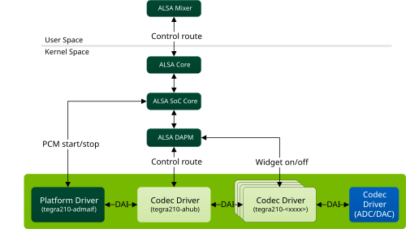
The functions of the platform and codec drivers are:
tegra210-admaif: A kernel driver that represents the interface between audio DMA (ADMA) and audio hub (AHUB)tegra210-<xxxx>: Kernel drivers that represent various hardware accelerators in AHUBtegra210-ahub: A kernel driver that helps to configure audio routing between various hardware accelerators
For more information about these modules, see the section AHUB modules.
User space ALSA applications interact with the ALSA core (kernel space) through APIs provided by user space libraries that initialize the actual hardware codecs at the backend of the audio pipeline.
DAPM#
ALSA is designed to support various functionalities including, but not
limited to, dynamic audio routing to available PCM devices. The
component of ALSA core that provides this support is called Dynamic
Audio Power Management (DAPM). DAPM minimizes power
consumption by controlling the power flow into and
out of various codec blocks in the audio subsystem. DAPM provides switches or kernel controls in the form of
widgets (components that affect audio power) to turn a module’s power on and off and to manipulate register
bits from user space
applications such as aplay, arecord, and amixer.
For more details on DAPM, refer ASoC DAPM.
In terms of software hierarchy, DAPM is part of the ALSA core, which manages the codec module’s power consumption. See the ALSA software hierarchy diagram under ALSA for details.
For more information see Clocking and Power Management.
Device Tree#
The device tree is a data structure that describes devices on the platform. It is passed to the operating system at boot time to avoid hard coding component details in the operating system. This makes it easier to change hardware configurations without rebuilding the kernel.
The device tree is composed of nodes and properties. Each node can have properties or child nodes. Each property consists of a name and one or more values. Device tree structures must be written in the correct format so that the data structure can be parsed by the operating system.
A simple device tree example is available at Codec Driver Instantiation Using Device Tree.
ASoC Driver#
The ASoC driver provides better ALSA support for embedded system-on-chip processors (e.g. DSP, AHUB) and portable audio codecs. It consists of these components:
Platform driver: Responsible for PCM registration and interfacing with the PCM driver. ADMAIF is the platform driver.
Codec drivers: Typically a generic, hardware-independent component that configures the codecs. Jetson ASoC extends this to some of the internal modules which are described in subsequent sections.
A codec driver must have at least one input or one output.
The driver architecture provides a way to define your own DAPM widgets for power management and kcontrols for register settings from user space.
Machine driver: Registers a sound card by binding the platform and codec components.
ASoC uses a common structure, snd_soc_component_driver, which represents both a platform and a codec component. It finally depends on which interfaces the drivers implement. For example, a platform component implements PCM interface as well, whereas a codec component can ignore it. Hence at top level, both platform and codec are referred as ASoC component. The same terminology is used in this document whenever a generic reference is needed.
For details on writing a machine driver and identifying a sound card, see ASoC Machine Driver.
Audio Hub Hardware Architecture#
The Audio Processing Engine (APE) is a standalone hardware block that takes care of all the audio needs of Jetson processors with minimal supervision from the CPU. Its audio hub (AHUB) contains many hardware accelerators and a DMA engine. This section provides an overview of:
The audio hub hardware architecture inside the SoC
The software architecture of the ASoC driver
This diagram summarizes the hardware architecture of the ASoC.
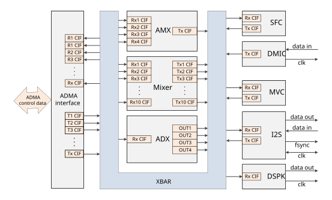
The audio hub contains several other modules as shown in the following table and it captures AHUB capabilites of a processor. Each module is described in detail in subsequent sections.
Module |
Component |
Instances |
|---|---|---|
I2S |
I2S interface |
6x |
DSPK |
Digital speaker interface |
2x |
DMIC |
Digital microphone controller |
4x |
Mixer |
Mixer |
1x |
AMX |
Audio multiplexer |
4x |
ADX |
Audio demultiplexer |
4x |
SFC |
Sample frequency converter |
4x |
MVC |
Master volume control |
2x |
ADMA |
Audio Direct Memory Access |
1x (32 channels) |
ADMAIF |
AHUB Direct Memory Access Interface |
1x (20 TX and RX channels) |
XBAR |
Crossbar; routes audio samples through other modules |
1x |
Note
The carrier board does not expose all instances of an I/O module (I2S, DMIC or DSPK) on each Jetson device. See Board Interfaces for more information about supported I/O instances and corresponding mapping with carrier board interface.
The modules in the audio hub support various kinds of audio devices that are expected to interface with the application processor, such as:
Cellular baseband devices
Different types of audio CODECs
Bluetooth® modules
Digital microphones
Digital speakers
The audio hub supports the different interfaces and signal quality requirements of these devices.
Each of the AHUB modules has at least one RX port or one TX port or both.
RX ports receive data from XBAR, and TX ports send data to XBAR. Thus XBAR is a switch where an audio input can be fed to multiple outputs, depending on the use case.
Each ADMAIF has TX and RX FIFOs that support simultaneous playback and capture. ADMA transfers the data to the ADMAIF FIFO for all audio routing scenarios.
For dynamic audio routing examples, see Usage and Examples.
Refer to the appropriate technical reference manual for more information about the hardware configuration of the desired Jetson device.
ASoC Driver Software Architecture#
The software architecture of the ASoC driver for Jetson leverages the features supported by the hardware and conforms to the ALSA framework.
As mentioned earlier, the ASoC driver comprises the platform, codec and machine drivers. The roles of these drivers are described briefly below, and in more detail in subsequent sections.
The ASoC driver provides NVIDIA Audio Hub (AHUB) hardware acceleration to the platform and codec drivers. AHUB Direct Memory Access Interface (ADMAIF) is implemented as a platform driver with PCM interfaces for playback and capture. The rest of the AHUB modules, such as the crossbar (XBAR), multiplexer (AMX), demultiplexer (ADX), and inter-IC sound (I2S), are implemented as codec drivers. Each of the drivers is connected to XBAR through a digital audio interface (DAI), inside a machine driver, forming an audio hub.
The machine driver probe instantiates the sound card device and
registers all of the PCM interfaces as exposed by ADMAIF. After booting,
but before using these interfaces for audio playback or capture, you must
set up the audio paths inside XBAR. By default, XBAR has no routing
connections at boot, and no complete DAPM paths to power on the
corresponding widgets. The XBAR driver introduces MUX widgets for all of
the audio components and enables custom routing through kcontrols from
user space using the ALSA amixer utility. If the audio path is not
complete, the DAPM path is not closed, the hardware settings are not
applied, and audio output cannot be heard.
For more details on how to set up the route and how to play back or capture on the PCM interfaces, see Usage and Examples.
Platform Driver#
The platform driver initializes and instantiates the ports for playback and capture inside the AHUB.
Users must connect some or all of these ports to form a full audio routing path. For examples of full audio paths, see the examples in Usage and Examples. Note that there are other elements in a full audio path setup, which are discussed in subsequent sections; the playback/capture ports set up by the platform driver are only a subset.
ADMAIF#
ADMAIF is the platform driver in the Jetson ASoC design. It implements
required PCM interfaces exposed via the snd_soc_component_driver structure.
These interfaces help perform DMA operations by interacting with the SoC
DMA engine’s upstream APIs. The ADMAIF platform driver defines DAIs and
registers them with ASoC core.
The ADMAIF channels are mapped to:
/dev/snd/pcmC1D<n>pfor playback/dev/snd/pcmC1D<n>cfor capture
Where <n> is the channel number minus 1. For example:
ADMAIF1is mapped topcmC1D0pfor playback, andpcmC1D0cfor capture.ADMAIF2is mapped topcmC1D1pfor playback, andpcmC1D1cfor capture.
Codec Driver#
An overview of codec drivers is presented in ASoC Driver. In the ASoC driver implementation, the rest of the AHUB modules, except for ADMAIF, are implemented as codec drivers. Their responsibilities include:
Interfacing to other modules by defining DAIs
Defining DAPM widgets and establishing DAPM routes for dynamic power switching
Exposing additional kcontrols as needed for user space utilities to dynamically control module behavior
Codec Driver Instantiation Using Device Tree#
Based on architecture, the Makefile in the following directory conditionally compiles the required device tree structure files into DTB files:
$KERNEL_TOP/arch/arm64/boot/dts/
When the kernel is flashed, the flash script chooses the appropriate
board-specific DTB file for parsing during boot, and the ASoC codecs
listed in device tree are instantiated. To add new devices to the device
tree, edit the DTS file, and flash the target again.
The DTS file name can be identified from the corresponding DTB file name,
and the DTB file is in the /boot/dtb target directory.
For example:
If ``/boot/dtb/kernel_tegra234-p3737-0000+p3701-0005-nv.dtb`` is the platform DTB,
the corresponding DTS file is
``hardware/nvidia/t23x/nv-public/nv-platform/tegra234-p3737-0000+p3701-0005-nv.dts``.
To add a new device, add the device name with the base address and status as "okay":
ahub@2900800 {
status = "okay";
i2s@2901000 {
status = "okay";
};
};
XBAR#
The XBAR codec driver defines RX, TX and MUX widgets for all of the
interfacing modules: ADMAIF, AMX, ADX, I2S, DMIC, Mixer, SFC and MVC.
MUX widgets are permanently routed to the corresponding TX widgets
inside the structure snd_soc_dapm_route.
XBAR interconnections are made by connecting any RX widget block to any MUX widget block as needed using the ALSA amixer utility. The get and put handlers for these widgets are implemented so that audio connections are stored by setting the appropriate bit in the hardware MUX register.
Mixer Controls#
If the sound card is available after boot, that indicates that the machine driver was successful in binding all codec drivers and the platform driver. The remaining step before obtaining the audio output on the physical codecs involves the use of MUX widgets to establish the DAPM path in order to route data from a specific input module to a specific output module. Input and output modules are dependent on the applicable use case. This provides flexibility for complex use cases.
This command realizes the internal AHUB path “ADMAIF1 RX to XBAR to I2S1 TX”:
$ amixer –c APE cset name='I2S1 Mux' 'ADMAIF1'
For usage and examples of various AHUB modules, see Usage and Examples.
AMX#
The Audio Multiplexer (AMX) module can multiplex up to four streams of up to 16 channels, with a maximum of 32 bits per channel, into a time division multiplexed (TDM) stream of up to 16 channels with up to 32 bits per channel. The AMX has four RX ports for receiving data from XBAR and one TX port for transmitting the multiplexed output to XBAR. Each port is exposed as a DAI, as indicated in the following diagram by solid lines. Routes are established using DAPM widgets, as indicated by dotted lines.
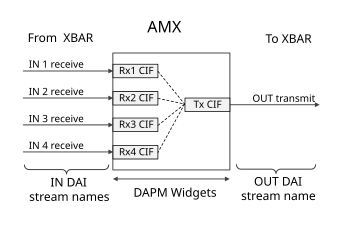
The AMX code driver supports these features:
Can multiplex up to four input streams of up to 16 channels each, and generate one output stream of up to 16 channels
Can assemble assemble an output frame from any combination of bytes from the four input frames (“byte ram”)
Provides two modes for data synchronization of the first output frame:
Wait for All mode: Wait for all enabled input streams to have data before forming the first output frame.
Wait for Any mode: Start forming the first output frame as soon as data is available in any enabled input stream.
Byte Map Configuration#
Each byte in the output stream is uniquely mapped from a byte in one of the four input streams. Mapping of bytes from input streams to the output stream is software-configurable through a byte map in the AMX module.
Each byte in the byte map is encoded with these fields:
Field |
Bits |
Description |
|---|---|---|
Input stream |
7:6 |
Identifies the input stream (0 to 3) that the byte is mapped from, where 0 is RxCIF0, etc. |
Input stream channel |
5:2 |
Identifies the input stream channel (0 to 15) that the byte is mapped from, where 0 is channel 0, etc. |
Input stream byte |
1:0 |
Identifies the byte in the input stream channel that the byte is mapped from (0 to 3), where 0 is byte 0, etc. |
Because the largest supported output frame size is 16 samples (from 16 channels) with 32 bits per sample, the byte map is organized as 16 words of 4 bytes (32 bits) each. Each word represents one input channel, and each byte in the word represents one output channel that the input channel may be mapped to.
If the output frame gets samples from only two input channels, then only the bytes in word 0 and word 1 need be programmed. If the output frame gets samples from all 16 channels, then the bytes in all 16 words must be programmed.
The output frame sample size determines which bytes must be programmed in each word. If the sample size of each channel in the output frame is 16 bits, then only byte 0 and byte 1 of each word in the byte map need be programmed. If the sample size of each channel in the output frame is 32 bits, then all four bytes of each word must be programmed.
Bear these points in mind:
Input bytes must be mapped to output bytes in order. For example, if input frame bytes 0 and 1 are both mapped to the output frame, byte 1 must be mapped to a position in the output frame after byte 0.
Not all bytes from an input frame need be mapped to the output frame.
Each byte in the output frame has a software-configurable enable flag. If a particular byte’s enable flag is cleared, the corresponding mapping in the byte map is ignored, and that byte is populated with zeros.
Mixer Controls#
Mixer controls are registered for each instance of AMX by the respective codec driver, and are used to configure the path, characteristics, and processing method of audio data. The table below lists instance-specific mixer controls.
Mixer Control * |
Description |
Possible Values |
|---|---|---|
AMX<i> RX<j> Mux |
Selects the AHUB client device from which the AMX input receives data. |
Run this command to get possible values:
|
AMX<i> Input<j> Audio Channels |
Specifies the channel count of the input streams. |
0-16 |
AMX<i> Output Audio Channels |
Specifies the channel count of the output stream. |
0-16 |
AMX<i> Byte Map <byte_num> |
Specifies the byte map (see Byte Map Configuration). |
0-255 |
* <i> refers to the instance ID of the AMX client, and <j> refers to the input port ID. |
||
Usage and examples of the AMX module can be found in Examples: AMX.
ADX#
The Audio Demultiplexer (ADX) module can demultiplex a single TDM stream of up to 16 channels and a maximum of 32 bits per channel into four streams of up to 16 channels and 32 bits per channel. The RX port of ADX receives input data from XBAR, and four TX ports transmit demultiplexed output to XBAR. Each port is exposed as a DAI, indicated by a solid line and routes are established using DAPM widgets as indicated by the dotted lines in the following diagram.
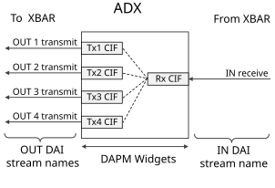
ADX has one input, RxCIF, which supplies the input stream. The core logic selects bytes from this input stream based on a byte map and forms output streams which are directed to a TxCIF FIFO to be transmitted to a downstream module in AHUB.
The ADX demultiplexer supports these features:
Demultiplexing one input stream of up to 16 channels to four output streams of up to 16 channels each
Assembling output frames that contain any combination of bytes from the input frame (“byte RAM”). The byte RAM design is the same as in AMX, except that the direction of data flow is reversed.
Byte Map Configuration#
Each byte in each output stream is mapped from a byte in the input stream. The mapping of the bytes from input stream to output streams is software-configurable through a byte map in the ADX module.
Field |
Bits |
Description |
|---|---|---|
Output stream |
7:6 |
Specifies the output stream that the byte is mapped to, where 0 represents TxCIF0, etc. |
Output stream channel |
5:2 |
Specifies the output stream channel that the byte is mapped to, where 0 represents channel 0, etc. |
Output stream byte |
1:0 |
Specifies the byte in the output stream channel that the byte is mapped to, where0 represents byte 0, etc. |
Because the maximum supported output frame size per stream is 16 channels with 32 bits per sample, the byte map is organized as 16 words of 32 bits (4 bytes) each.
Each word represents one channel in the input frame. Therefore, if the input frame only has two channels then only the bytes in word 0 and word 1 need be programmed, while if the input frame has 16 channels (the maximum allowed), then bytes in all 16 words must be programmed.
The input frame sample size determines the bytes that must be programmed in each word. If the sample size of each channel in the input frame is 16 bits, then only byte 0 and byte 1 of each word need be programmed. If the sample size of each channel in the input frame is 32 bits, then all four bytes of each word must be programmed.
Bear these points in mind:
Input bytes must be mapped to output bytes in order. For example, if input frame bytes 0 and 1 are both mapped to the output frame, byte 1 must be mapped to a position in the output frame after byte 0.
Not all bytes in an input frame need be mapped to the output frame.
Each byte in the output frame has a software-configurable enable flag. If a particular byte’s enable flag is cleared, the corresponding mapping in the byte map is ignored, and that byte is populated with zeros.
Mixer Controls#
Mixer controls are registered for each instance of ADX by the respective codec driver, and are used to configure the path, characteristics, and processing method audio data. The table below lists the instance-specific mixer controls for each instance of the ADX module.
Mixer Control * |
Description |
Possible Values |
|---|---|---|
ADX<i> Mux |
Selects the AHUB client device from which the ADX input receives data. |
Use this command to get possible values:
|
ADX<i> Input Audio Channels |
Configures the channel count of the input stream. |
0-16 |
ADX<i> Output<j> Audio Channels |
Configures the channel count of the output streams. |
0-16 |
ADX<i> Byte Map <byte_num> |
Configures the byte map (see Byte Map Configuration) |
0-255 |
* <i> refers to the instance ID of the ADX client, and <j> refers to the output port ID. |
||
Usage and examples of ADX module can be found in Examples: ADX.
I2S#
An I2S codec driver supports bidirectional data flow, and so defines CIF and DAP RX/TX DAPM widgets with the CIF side of I2S interfacing with XBAR, and the DAP side interfacing with the physical codec on the Jetson device.
The DAPM routes established with these DAPM widgets are shown in the following diagram as dotted lines. I2S modules also expose kernel control to enable internal I2S loopback.
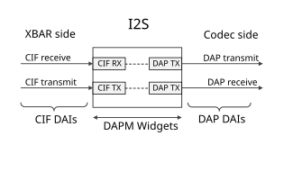
The I2S controller implements full-duplex and half-duplex point-to-point serial interfaces. It can interface with I2S-compatible products, such as digital audio tape devices, digital sound processors, modems, and Bluetooth chips.
The I2S codec driver supports these features:
Can operate both as master and slave
Supports the following modes of data transfer:
LRCK modes: I2S mode, Left Justified Mode (LJM), or Right Justified Mode (RJM)
FSYNC modes: DSP A or B mode
Can transmit and receive data:
Sample size: 8 bits (S8), 16 (S16_LE), or 24/32 bits (S32_LE)
Sample rate: 8000, 11025, 16000, 22050, 24000, 32000, 44100, 48000, 88400, 96000, 176400, or 192000 Hz
Channels: LRCK modes support stereo data; DSP A and B modes support 1 to 16 channels
Device Tree Entry#
This I2S node entry enables a given I2S instance on a given chip:
aconnect@2a41000 {
compatible = "nvidia,tegra234-aconnect",
"nvidia,tegra210-aconnect";
status = "okay";
...
tegra_ahub: ahub@2900800 {
compatible = "nvidia,tegra234-ahub";
status = "okay";
...
tegra_i2s1: i2s@2901000 {
compatible = "nvidia,tegra234-i2s",
"nvidia,tegra210-i2s";
reg = <0x0 0x2901000 0x0 0x100>;
clocks = <&bpmp TEGRA234_CLK_I2S1>,
<&bpmp TEGRA234_CLK_I2S1_SYNC_INPUT>;
clock-names = "i2s", "sync_input";
assigned-clocks = <&bpmp TEGRA234_CLK_I2S1>;
assigned-clock-parents =
<&bpmp TEGRA234_CLK_PLLA_OUT0>;
assigned-clock-rates = <1536000>;
sound-name-prefix = "I2S1";
#sound-dai-cells = <1>;
nvidia,ahub-i2s-id = <0>;
status = "okay";
};
...
};
};
The snippet above is from the device tree structure for Jetson AGX Orin.
Your address and a few other properties are
Jetson device-specific and might be referenced by the corresponding Jetson device
tree files. In the case of I2S, the device entry above specifies the
names of clocks needed by the device, the source of each clock, and the
register base address and address range belonging to the device. Other
properties such as fsync-width may be adjusted to fit the use case’s
requirements.
Mixer Controls#
Mixer controls are registered for each instance of I2S by the respective codec driver, and are used to configure the path, characteristics, and processing method of audio data. The table below lists instance-specific mixer controls.
Mixer Control * |
Description |
Possible Values |
|---|---|---|
I2S<i> Loopback |
Enables internal I2S loopback. |
|
I2S<i> Playback Audio Bit Format |
Configures length of playback sample bits. |
16 or 32 |
I2S<i> Capture Audio Bit Format |
Configures length of capture sample bits. |
16 or 32 |
I2S<i> Client Bit Format |
Configures length of playback/capture sample bits on client side |
16 or 32 |
I2S<i> FSYNC Width |
Configures frame sync signal’s width in terms of bit clocks. |
0-255 |
I2S<i> Sample Rate |
Configures sample rate of audio stream. |
8000, 11025, 16000, 22500, 24000, 32000, 44100, 48000, 88400, 96000, 176400, or 192000 Hz |
I2S<I> Playback Audio Channels |
Configures channel count of audio playback stream. |
0-16 |
I2S<I> Capture Audio Channels |
Configures channel count of audio capture stream. |
0-16 |
I2S<I> Client Channels |
Configures channel count of audio playback/capture stream on client side |
0-16 |
I2S<i> Capture Stereo To Mono |
Configures stereo to mono conversion method to be applied to capture stream. |
|
I2S<i> Capture Mono To Stereo |
Configures mono to stereo conversion method to be applied to capture stream. |
|
I2S<i> Playback Stereo To Mono |
Configures stereo to mono conversion method to be applied to playback stream. |
|
I2S<i> Playback Mono To Stereo |
Configures mono to stereo conversion method to be applied to playback stream. |
|
I2S<i> Playback FIFO Threshold |
Configures CIF’s FIFO threshold for playback to start. |
0-63 |
I2S<i> BCLK Ratio |
I2S BCLK (bit clock) multiplier |
1, 2 … |
I2S<i> codec frame mode |
Configures I2S frame
mode. |
Note: For mono use cases, set
value to |
I2S<i> codec master mode |
Configures I2S codec’s mode of operation (bit-master, bit-slave frame-slave, or frame-master). |
|
I2S<i> Mux |
Selects the AHUB client device from which the I2S input receives data. |
Use this command to get possible values:
|
* <i> refers to the instance ID of the ADX client, and <j> refers to the output port ID. |
||
For usage and an example for the I2S module, see Examples: I2S.
Mixer#
The Mixer mixes audio streams from any of the 10 input ports that receive data from XBAR to any of the 5 output ports that transmit data onto XBAR. The DAPM widgets and routes for Mixer are shown in the figure below. The Mixer driver also exposes RX Gain and Mixer Enable as additional kcontrols to set the volume of each input stream and to globally enable or disable the Mixer respectively.
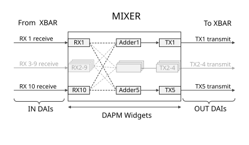
Features Supported#
Supports mixing up to 10 input streams
Supports five outputs, each of which can be a mix of any combination of 10 input streams
Can transmit and receive:
Sample size: 8, 16, 24, or 32
Sample rate: 8000, 11025, 16000, 22500, 24000, 32000, 44100, 48000, 88400, 96000, or 192000 Hz
Channels: 1-8
Fixed gain for each stream is also available
Mixer Controls#
Mixer controls are registered for each instance of Mixer by the corresponding codec driver. They are used to the configure path, characteristics, and processing method of audio data. The table below lists instance-specific mixer controls.
Mixer Control * |
Description |
Possible Values |
|---|---|---|
MIXER1 RX<i> Mux |
Selects the AHUB client device from which the I2S input receives data. |
Run this command to get possible values:
|
MIXER1 Mixer Enable |
Enables Mixer. |
|
MIXER1 Adder<j> RX<i> |
Enables the input
stream |
|
MIXER1 RX<i> Audio Channels |
Configures the channel count of the input stream. |
0-8 |
MIXER1 TX<j> Audio Channels |
Configures the channel count of the output stream. |
0-8 |
MIXER1 RX<i> Gain |
Configures the gain for an input stream before you add in the adder. |
0-131072 |
MIXER1 RX<i> Gain Instant |
Configures the gain for an input stream before you add in the adder. |
0-131072 |
* <i> refers to the input port of the mixer, and <j> refers to the output port of the mixer. |
||
For usage and examples for the Mixer module, see Examples: Mixer.
SFC#
The Sampling Frequency Converter (SFC) converts the input sampling frequency to the required sampling rate. SFC has one input port and one output port, which are connected to XBAR.
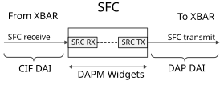
Features Supported#
Sampling frequency conversion of streams of up to two channels (stereo)
Very low latency (maximum latency less than 125 microseconds)
Supports the frequency conversions marked by ‘X’ in the following table. (Shaded cells represent the same frequency in and out. These cases bypass frequency conversion.)
|
Fs in →
↓ Fs out
|
8 | 11.025 | 16 | 22.05 | 24 | 32 | 44.1 | 48 | 88.2 | 96 | 176.4 | 192 |
|---|---|---|---|---|---|---|---|---|---|---|---|---|
| 8 | X | X | X | X | ||||||||
| 11.025 | X | X | ||||||||||
| 16 | X | X | X | X | ||||||||
| 22.05 | X | X | ||||||||||
| 24 | X | X | ||||||||||
| 32 | X | X | ||||||||||
| 44.1 | X | X | X | |||||||||
| 48 | X | X | X | X | X | X | ||||||
| 88.2 | X | X | ||||||||||
| 96 | X | X | ||||||||||
| 176.4 | X | X | ||||||||||
| 192 | X | X |
Mixer Controls for SFC#
Mixer controls are registered for each instance of SFC by the corresponding codec driver. They are used to configure the path, characteristics, and processing method of audio data. The table below lists instance-specific mixer controls.
Mixer Control * |
Description |
Possible Values |
|---|---|---|
SFC<i> Mux |
Selects the AHUB client device from which the I2S input receives data. |
Use this command to get possible values:
|
SFC<i> Init |
Enables the instance of SFC. |
|
SFC<i> Input Sample Rate |
Configures sampling rate of the input stream. |
8000, 11025, 16000, 22050, 24000, 32000, 44100, 48000, 88200, 96000, 176400, or 192000 Hz |
SFC<i> Output Sample Rate |
Configures sampling rate of the output stream. |
8000, 11025, 16000, 22050, 24000, 32000, 44100, 48000, 88200, 96000, 176400, or 192000 Hz |
SFC<i> Input Audio Channels |
Configures channel count of the input stream. |
1, 2 |
SFC<i> Output Audio Channels |
Configures channel count of the input stream. |
1, 2 |
SFC<i> Input Audio Bit Format |
Configures sample size of the input stream. |
16 or 32 |
SFC<i> Output Audio Bit Format |
Configures sample size of output stream. |
16 or 32 |
SFC<I> Input Stereo To Mono |
Configures stereo to mono conversion of input stream |
|
SFC<I> Input Mono To Stereo |
Configures mono to stereo conversion of input stream |
|
SFC<I> Output Stereo To Mono |
Configures stereo to mono conversion of output stream |
|
SFC<I> Output Mono To Stereo |
Configures mono to stereo conversion of output stream |
|
* <i> refers to the instance ID of SFC. |
||
For usage and examples for the SFC module, see Examples: SFC.
DMIC#
The DMIC controller converts PDM signals to PCM (pulse code modulation) signals.
The DMIC controller can directly interface to PDM input devices to avoid the need for an external PDM-capable codec.
The following diagram shows the DAPM widgets and routes.
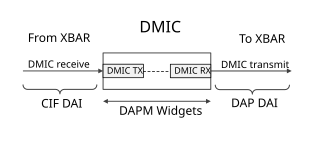
Features Supported#
Conversion from PDM (pulse density modulation) signals to PCM (Pulse code modulation) signals
Sample rate: 8000, 16000, 44100, or 48000 Hz
Sample size: 16 bits (S16_LE) or 24 bits (S32_LE)
OSR (oversampling ratio): 64, 128, or 256
Device Tree Entry#
The following device tree node definition illustrates generic device tree entries. This node enables one instance of DMIC on Jetson AGX Orin series:
aconnect@2900000 {
compatible = "nvidia,tegra234-aconnect",
"nvidia,tegra210-aconnect";
status = "okay";
...
tegra_ahub: ahub@2900800 {
compatible = "nvidia,tegra234-ahub";
status = "okay";
. . .
tegra_dmic1: dmic@2904000 {
compatible = "nvidia,tegra234-dmic",
"nvidia,tegra210-dmic";
reg = <0x0 0x2904000 0x0 0x100>;
clocks = <&bpmp TEGRA234_CLK_DMIC1>;
clock-names = "dmic";
assigned-clocks = <&bpmp TEGRA234_CLK_DMIC1>;
assigned-clock-parents = <&bpmp TEGRA234_CLK_PLLA_OUT0>;
assigned-clock-rates = <3072000>;
sound-name-prefix = "DMIC1";
#sound-dai-cells = <1>;
status = "okay";
};
...
};
};
This definition specifies the register base address and address range belonging to the device, apart from clock-names and their sources.
Mixer Controls for DMIC#
Mixer controls are registered for each instance of DMIC by the corresponding codec driver. They are used to configure the path, characteristics, and processing method of audio data. The table below lists instance specific mixer controls.
Mixer Control * |
Description |
Possible Values |
|---|---|---|
DMIC<i> Boost Gain Volume |
Configures volume. |
0 to 25599, representing 0 to 256 in linear scale (with 100x factor) |
DMIC<i> Channel Select |
Selects channel for mono capture. |
|
DMIC<i> Mono To Stereo |
Configures mono to stereo conversion method for DMIC capture |
|
DMIC<i> Stereo To Mono |
Configures stereo to mono conversion method for DMIC capture |
|
DMIC<i> Audio Bit Format |
Configures output sample size in bits. |
16 or 32 |
DMIC<i> Sample Rate |
Configures sample rate of DMIC capture |
8000, 11025, 16000, 22050, 24000, 32000, 44100, or 48000 Hz |
DMIC<i> Audio Channels |
Configures channel count of DMIC capture |
16 or 32 |
DMIC<i> OSR Value |
Configures OSR (oversampling ratio). OSR<i> indicates selecting one sample from the several samples received on input lines of the DMIC processing block. |
|
DMIC<i> LR Polarity Select |
Configures the left/right channel polarity |
|
* |
||
For usage and examples for DMIC, see Examples: DMIC.
MVC#
MVC (volume control) applies gain or attenuation to a digital signal path. The MVC block is a generic block. It can be used to apply volume control:
To the input or output digital signal path
Per-stream and to all streams (primary volume control)
The following diagram shows MVC’s DAPM widgets and routes.
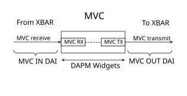
Features Supported#
Programmable volume gain for data formats:
Sample size: 8, 16, 24, or 32 bits
Sample rate: 8000, 11025, 16000, 22050, 24000, 32000, 44100, 48000, 88400, 96000, 176400, or 192000 Hz
Channels: 1-8
Programmable curve ramp for volume control
Separate mute and unmute controls
Mixer Controls#
Mixer controls are registered for each instance of MVC by the corresponding codec driver. They are used to configure the path, characteristics, and processing method of audio data. The table below lists instance-specific mixer controls.
Mixer Control * |
Description |
Possible Values |
|---|---|---|
MVC<i> Volume |
Configures master volume |
0 to 16000 (Represents -120 to +40 dB with 100x scale factor) |
MVC<i> Channel<j> Volume |
Configures channel-specific volume |
0 to 16000 (Represents -120 to +40 dB with 100x scale factor) |
MVC<i> Mute |
Enables/disables Master mute |
|
MVC<i> Per Chan Mute Mask |
Controls Channel- specific mute mute/unmute |
0 to 255 |
MVC<i> Curve Type |
Configures volume ramp curve type |
|
MVC<i> Audio Channels |
Configures channels of audio data passing through MVC |
0-8 |
MVC<i> Audio Bit Format |
Configures sample size of input audio data through MVC |
16 or 32 |
MVC<i> Bits |
Configures sample size of output audio data through MVC |
|
MVC<i> Mux |
Selects the AHUB client device from which the MVC input receives data. |
Use this command to get possible values:
|
* |
||
For usage and examples of the MVC module, see Examples: MVC.
DSPK#
The Digital Speaker (DSPK) is a PDM transmit block that converts multi-bit PCM audio input to oversampled one-bit PDM output. The DSPK controller consists of an interpolator that oversamples the incoming PCM and a delta-sigma modulator that converts the PCM signal to PDM.
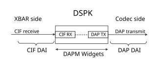
Features Supported#
Sample rate: 8000, 11025, 16000, 22050, 24000, 32000, 44100, 48000, 88400, 96000, 176400, or 192000 Hz
Input PCM bit width: 16 bits (S16_LE) or 24 bits (S32_LE)
Oversampling ratio: 32, 64, 128, or 256
Passband frequency response: ≤0.5 dB peak-to-peak in 10 Hz – 20 KHz range
Dynamic range: ≥105 dB
Device Tree Entry#
This DSPK node entry enables a given DSPK instance on a given chip:
aconnect@2900000 {
compatible = "nvidia,tegra234-aconnect",
"nvidia,tegra210-aconnect";
status = "okay";
. . .
tegra_ahub: ahub@2900800 {
compatible = "nvidia,tegra234-ahub";
status = "okay";
...
tegra_dspk1: dspk@2905000 {
compatible = "nvidia,tegra234-dspk",
"nvidia,tegra186-dspk";
reg = <0x0 0x2905000 0x0 0x100>;
clocks = <&bpmp TEGRA234_CLK_DSPK1>;
clock-names = "dspk";
assigned-clocks = <&bpmp TEGRA234_CLK_DSPK1>;
assigned-clock-parents =
<&bpmp TEGRA234_CLK_PLLA_OUT0>;
assigned-clock-rates = <12288000>;
sound-name-prefix = "DSPK1";
#sound-dai-cells = <1>;
status = "okay";
};
...
};
};
This example is from the Jetson AGX Orin device tree structure file. It specifies the register base address and address range belonging to the device, the clocks required, and their sources.
Mixer Controls#
Mixer controls are registered for each instance of DSPK by the corresponding codec driver. They are used to the configure path, characteristics, and processing method of audio data. The table below lists instance-specific mixer controls.
Mixer Control * |
Description |
Possible Values |
|---|---|---|
DSPK<i> Mux |
Selects the AHUB client device which the DSPK input receives data from |
Use this command to get possible values:
|
DSPK<i> OSR Value |
Configures the oversampling ratio. OSR_i indicates that i bits of PCM audio input to oversampled 1-bit PDM output |
|
DSPK<i> FIFO Threshold |
Specifies the number of words that need to be present in the FIFO before a CIF starts transfer |
0-3 |
DSPK<i> Audio Bit Format |
Configures sample size of playback stream |
None, 16 or 32 |
DSPK<i> Audio Channels |
Configures channel count of playback stream |
0-2 |
DSPK<i> LR Polarity Select |
Configures DSPK left or right channel polarity |
|
DSPK<i> Channel Select |
Select channel for playback |
|
DSPK<i> Sample Rate |
Configure sample rate of playback stream |
8-48 kHz |
DSPK<i> Mono To Stereo |
Mono to stereo conversion of playback stream |
|
DSPK<i> Stereo To Mono |
Stereo to mono conversion of playback stream |
|
* |
||
For usage and examples for the DSPK module, see Examples: DSPK.
AHUB Client TX Port Names#
This is a list of names of AHUB clients’ TX ports.
AHUB Client |
TX Port Names * |
|---|---|
ADMAIF |
|
I2S |
|
DMIC |
|
DSPK |
|
AMX |
|
ADX |
|
SFC |
|
MVC |
|
MIXER |
|
* |
|
ASoC Machine Driver#
The ASoC machine driver connects the codec drivers to a PCM driver by linking the DAIs exposed by each module. It instantiates the sound card (a software component in ASoC architecture).
The structure snd_soc_dai_link, in ASoC core, defines a link
that connects two DAIs from different modules. Such a link is called a
DAI link. A given machine driver can have one or more of DAI links,
which are connected at runtime to form an audio path.
In brief, the ASoC machine driver’s functions are to:
Parse all DAI links from DT. These include both SoC internal DAI links (those between XBAR and various AHUB modules) and Jetson device-specific DAI links between SoC I/O modules and external audio codecs.
Parse DAPM widgets and routes from the device tree (DT), which are required to connect machine source/sink widgets with codec endpoints. For example machine widgets are defined for headphone jacks, speakers and microphones. These in turn are mapped to corresponding audio codec inputs and outputs.
Configure the Audio Processing Engine (APE) subsystem and codec clocks.
Propagate the runtime PCM parameters, such as
sample-rateandsample-size.
The Jetson ASoC machine driver is available in the kernel sources archive in this location:
kernel/nvidia-oot/sound/soc/tegra/tegra_machine_driver.c
All DAI links are defined in:
hardware/nvidia/t23x/nv-public/overlay/tegra234-soc-audio-dai-links.dtsi
All I/O DAI links are connected to dummy endpoints by default. This allows the SoC to drive the interface pins even when no external device is present. These have phandle references which can easily be used to override the specific properties. In short, if you want interface to a specific external codec, you must override the corresponding DAI link in the device tree.
For example, I2S1 DAI is connected to the dummy codec, and looks like below:
i2s1_to_codec: nvidia-audio-card,dai-link@76 {
status = "okay";
format = "i2s";
link-type = <C2C_LINK>;
i2s1_cpu: cpu {
sound-dai = <&tegra_i2s1 I2S_DAP>;
};
codec {
sound-dai = <&tegra_i2s1 I2S_DUMMY>;
};
};
To interface a customized sound card#
Update the platform DAI link, DAPM widgets and routes defined in the device tree.
You must update these items because the machine driver parses the device tree in order to instantiate the sound card. Update the device tree properties of the sound node for the Jetson device when you customize to support a third-party audio codec.
Make any necessary changes for configuring the codec clock. For more information about this topic, see Device Tree Configuration For a Custom Audio Card.
The following example gives an overview of the DAI links and DAPM widgets for the onboard audio codec (RT5640) on Jetson AGX Orin. It uses the SoC I2S1 instance. Users can similarly create overlays for other DAI links depending on the usage and interface:
tegra_sound_graph: tegra_sound: sound { status = "okay"; compatible = "nvidia,tegra186-audio-graph-card", "nvidia,tegra186-ape"; clocks = <&bpmp TEGRA234_CLK_PLLA>, <&bpmp TEGRA234_CLK_PLLA_OUT0>, <&bpmp TEGRA234_CLK_AUD_MCLK>; clock-names = "pll_a", "plla_out0", "extern1"; assigned-clocks = <&bpmp TEGRA234_CLK_AUD_MCLK>; assigned-clock-parents = <&bpmp TEGRA234_CLK_PLLA_OUT0>; nvidia-audio-card,name = "NVIDIA Jetson AGX Orin APE"; nvidia-audio-card,mclk-fs = <256>; label = "NVIDIA Jetson AGX Orin APE"; nvidia-audio-card,widgets = "Headphone", "CVB-RT Headphone Jack", "Microphone", "CVB-RT Mic Jack", "Speaker", "CVB-RT Int Spk", "Microphone", "CVB-RT Int Mic"; nvidia-audio-card,routing = "CVB-RT Headphone Jack", "CVB-RT HPOL", "CVB-RT Headphone Jack", "CVB-RT HPOR", "CVB-RT IN1P", "CVB-RT Mic Jack", "CVB-RT IN2P", "CVB-RT Mic Jack", "CVB-RT Int Spk", "CVB-RT SPOLP", "CVB-RT Int Spk", "CVB-RT SPORP", "CVB-RT DMIC1", "CVB-RT Int Mic", "CVB-RT DMIC2", "CVB-RT Int Mic"; /* Specific overrides for I2S1 DAI link */ nvidia-audio-card,dai-link@76 { link-name = "rt5640-playback"; codec { sound-dai = <&rt5640 0>; prefix = "CVB-RT"; }; }; }; i2c@31e0000 { status = "okay"; audio-codec@1c { compatible = "realtek,rt5640"; reg = <0x1c>; #sound-dai-cells = <1>; ... }; };
The sound node is added to the device tree file for sound card registration and passing Jetson device related data to the machine driver. Some of the sound node’s properties are described below. All of the described properties are required except as noted.
compatible: Specifies the machine driver with which the sound node is compatible. Its value must benvidia,tegra186-ape.nvidia-audio-card,widgets: Defines machine source or sink widget endpoints. ASoC core provides predefined identifiers which can be used to define the required widgets. The machine driver need not maintain these widgets explicitly, and can make use of this property to declare the required number of widgets.nvidia-audio-card,routing: Describes the route between the Jetson ASoC machine driver widgets and the codec widgets. The machine driver defines DAPM widgets for the Jetson device’s physical microphone, headphone, and speakers. These must be connected to the corresponding DAPM widgets on the codec, which represent the codec’s microphones, headphones, speakers, etc.link-name: The Jetson ASoC machine driver uses this property to identify the DAI link and perform any necessary configuration such as codec clock setup.The properties in a DAI node are described in the section Definition of a DAI Node, below.
Reference definitions of the device tree’s sound node is split across multiple DT files, and for the various Jetson products, the definitions are available in the kernel source archive in the following locations:
Common for all t234 platforms:
hardware/nvidia/t23x/nv-public/tegra234.dtsi
For the Jetson Orin Series:
hardware/nvidia/nv-public/tegra234-p3767.dtsi hardware/nvidia/nv-public/nv-platform/tegra234-p3768-0000.dtsi
For Jetson AGX Orin:
hardware/nvidia/nv-public/tegra234-p3737-0000+p3701-0000.dts hardware/nvidia/nv-public/nv-platform/tegra234-p3737-0000.dtsi hardware/nvidia/nv-public/overlay/tegra234-p3737-0000+p3701-0000-dynamic.dts
For a complete example of how to customize the device tree for a different audio codec, see 40-pin GPIO Expansion Header, which describes interfacing a codec on the 40-pin GPIO expansion header.
Definition of a DAI Node#
Each DAI link for the I2S interface must be defined by a DAI node, which is a subnode of the sound node. The overall format of a DAI node is described in ASoc Machine Driver.
For each I2S interface DAI link, you must configure the following properties:
bitclock-masterandframe-master: Optional Booleans; specify whether the codec is a slave or a master. The codec is the I2S bit clock and frame master if these properties are present, or the I2S slave if they are absent.format: Configures CPU/CODEC common audio format. The value may bei2s,right_j,left_j,dsp_a, ordsp_b.bclk-ratio: An integer used to configure the I2S bit clock rate. The I2S bit clock rate is the product of this value and the stream sample rate. A value of 0 yields the same clock rate as 1.
Other DAI link properties are common for I2S, DMIC, and DSPK interface-based DAI links:
srate: PCM data stream sample ratebit-format: Data stream sample sizenum-channel: Number of data stream channels
Clocking and Power Management#
The following debugfs node listing, obtained from
/sys/kernel/debug/clk/clk_summary, shows the clock tree of the ASoC
driver for Jetson AGX Orin in the idle state, when no audio
playback or capture operations are in progress. The clock trees for the other
Jetson devices are similar.
| clock | enable_cnt | prepare_cnt | rate | req_rate | accuracy | phase |
|---|---|---|---|---|---|---|
| i2s6_sync_input | 0 | 0 | 0 | 0 | 0 | 0 |
| i2s5_sync_input | 0 | 0 | 0 | 0 | 0 | 0 |
| i2s4_sync_input | 0 | 0 | 0 | 0 | 0 | 0 |
| i2s3_sync_input | 0 | 0 | 0 | 0 | 0 | 0 |
| i2s2_sync_input | 0 | 0 | 0 | 0 | 0 | 0 |
| i2s1_sync_input | 0 | 0 | 0 | 0 | 0 | 0 |
| dmic4_sync_clk | 0 | 0 | 0 | 0 | 0 | 0 |
| dmic3_sync_clk | 0 | 0 | 0 | 0 | 0 | 0 |
| dmic2_sync_clk | 0 | 0 | 0 | 0 | 0 | 0 |
| dmic1_sync_clk | 0 | 0 | 0 | 0 | 0 | 0 |
| i2s6_sync_clk | 0 | 0 | 0 | 0 | 0 | 0 |
| i2s5_sync_clk | 0 | 0 | 0 | 0 | 0 | 0 |
| i2s4_sync_clk | 0 | 0 | 0 | 0 | 0 | 0 |
| i2s3_sync_clk | 0 | 0 | 0 | 0 | 0 | 0 |
| i2s2_sync_clk | 0 | 0 | 0 | 0 | 0 | 0 |
| i2s1_sync_clk | 0 | 0 | 0 | 0 | 0 | 0 |
| pll_a1 | 0 | 0 | 600000000 | 600000000 | 0 | 0 |
| ape | 0 | 0 | 150000000 | 150000000 | 0 | 0 |
| apb2ape | 0 | 0 | 150000000 | 150000000 | 0 | 0 |
| pll_a | 0 | 0 | 258000000 | 258000000 | 0 | 0 |
| dmic4 | 0 | 0 | 12285714 | 12285714 | 0 | 0 |
| dmic3 | 0 | 0 | 12285714 | 12285714 | 0 | 0 |
| dmic2 | 0 | 0 | 12285714 | 12285714 | 0 | 0 |
| dmic1 | 0 | 0 | 12285714 | 12285714 | 0 | 0 |
| i2s6 | 0 | 0 | 23454545 | 23454545 | 0 | 0 |
| i2s5 | 0 | 0 | 23454545 | 23454545 | 0 | 0 |
| i2s4 | 0 | 0 | 23454545 | 23454545 | 0 | 0 |
| i2s3 | 0 | 0 | 23454545 | 23454545 | 0 | 0 |
| i2s2 | 0 | 0 | 23454545 | 23454545 | 0 | 0 |
| i2s1 | 0 | 0 | 23454545 | 23454545 | 0 | 0 |
| ahub | 0 | 0 | 86000000 | 86000000 | 0 | 0 |
The clocks of the individual modules, AMX, ADX, AFC, SFC, MIXER, and others, are internally driven by the APE clock.
The clock for all codec drivers (I2S, DMIC, DSPK, XBAR, etc.) are switched off in the idle state. They are turned on when audio playback or capture begins.
Dynamic PLL_A Rate Update#
PLL_A is a clock source provided by Jetson processors for audio needs. Its primary
function is to source the clocking requirements of I/O modules such
as I2S, DMIC and DSPK. The AUD_MCLK clock is also derived from PLL_A.
Jetson devices support two families of sample rates:
Multiples of 8 Kbps (8x): 8000, 16000, 24000, 32000, 48000, 96000, and 192000 Hz
Multiples of 11.025 Kbps (11.025x): 11025, 22050, 44100, 88200, and 176400 Hz
A single PLL_A base rate cannot support both families of rates.
Therefore, separate base rates are used for 8x and 11.025x. The machine
driver sets the rate of PLL_A at run time, depending on the incoming
stream’s sample rate. Thus users can play and capture at a rate from
either list above.
Fixed PLL_A Rate#
If you want a fixed PLL_A base rate, use the
fixed-pll property in the sound node’s device tree binding. This prevents the specified machine driver
from updating the rate at run time. The following example shows how to fix the base rate
to yield 8x sampling rates:
sound {
. . .
fixed-pll;
clocks = <&bpmp TEGRA234_CLK_PLLA>,
<&bpmp TEGRA234_CLK_PLLA_OUT0>,
<&bpmp TEGRA234_CLK_AUD_MCLK>;
clock-names = "pll_a", "plla_out0", "extern1";
assigned-clocks = <&bpmp TEGRA234_CLK_AUD_MCLK>;
assigned-clock-parents = <0>, <0>, <&bpmp TEGRA234_CLK_PLLA_OUT0>;
assigned-clock-rates = <368640000>, <49152000>, <12288000>;
. . .
}
Similarly to fix the base rate for 11.025x sampling rates, change the
assigned-clock-rates property like this:
assigned-clock-rates = <338688000>, <45158400>, <11289600>;
High Definition Audio#
Jetson devices support one or more High Definition Audio (HDA) interfaces through on-board HDMI, DP, and USB-C ports. These interfaces can be used to perform high-quality audio rendering on devices like TVs and A/V receivers. These HDA interfaces are available on various Jetson devices:
Jetson Orin NX: one DP (supports single or multiple streams)
Jetson Orin Nano: one DP (supports single or multiple streams)
Jetson Orin NX Module + Jetson Xavier NX Developer Kit Carrier Board: one HDMI, one DP (can support single or multiple streams)
Jetson AGX Orin: one DP (can support single or multiple streams)
HDMI and DP interfaces can be connected using the respective connectors. DP over USB-C needs a USB-C to DP converter to connect to a DP sink.
Features Supported#
Jetson High Definition Audio supports the following features:
Compliant with High Definition Audio Specification Revision 1.0
Supports HDMI 1.3a and DP
Audio Format Support
Channels: 2 to 8
Sample size: 16 bits (S16_LE) or 24 bits (S32_LE)
Sample rate:
32000, 44100, 48000, 88200, 96000, 176400, or 192000 Hz (HDMI)
32000, 44100, 48000, 88200, or 96000 Hz (DP)
You may experience issues when playing high resolution audio formats (using multichannel output or a high sampling rate), even with an audio format that your monitor supports. This is because the available audio bandwidth depends on the HDMI configuration, increasing with higher display resolutions.
If you encounter issues when playing a high resolution audio format, NVIDIA recommends setting your display resolution at least to the level that corresponds to your audio format in the following table. This table is taken from the HDMI 1.3a specification document.
| Display resolution | Format timing | Pixel repetition | Maximum fs, 8 channels (Hz) | Maximum frame rate, 2 channels, comp * | SuperAudio CD channel count | ||
|---|---|---|---|---|---|---|---|
| VGA | 640×480p | none | 48000 | 192 | 2 | ||
| 480i | 1440x480i | 2 | 88200 | 192 | 2 | ||
| 2880x480i | 4 | 192000 | 768 | 8 | |||
| 240p | 1440x240p | 2 | 88200 | 192 | 2 | ||
| 2880x240p | 4 | 192000 | 768 | 8 | |||
| 480p | 720x480p | none | 48000 | 192 | 2 | ||
| 1440x480p | 2 | 176400 | 384 | 8 | |||
| 2880x480p | 4 | 192000 | 768 | 8 | |||
| 720p | 1280x720p | none | 192000 | 768 | 8 | ||
| 1080i | 1920x1080i | ||||||
| 1080p | 1920x1080p | ||||||
|
|||||||
Software Driver Details#
HDA interfaces are accessible through standard ALSA interfaces. You can
use the aplay utility for rendering audio:
$ aplay -Dhw:HDA,<devID> <wav_in>
Where:
<deviceID>is the sound interface’s device ID.<wav_in>is the name of the sound file to be played. It should be a.wavfile.
Here are some further details about driver usage:
All HDA interfaces are available under one card.
You can read card details from
/proc/asound/cards.You can see available PCM devices (i.e. HDA interfaces) under
/proc/asound/card<n>/.AHUB supports 16-bit audio in S16_LE format, and 20 or 24-bit audio in S32_LE format.
USB Audio#
All Jetson devices provide a USB host interface for connecting various USB devices, including USB audio devices such as speakers, microphones and headsets.
Features Supported#
Jetson High Definition Audio supports the following features:
Channels: 8 maximum
Sample size: 16 bits (S16_LE) or 24 bits (S24_3LE)
Sample rate: 32000, 44100, 48000, 88200, 96000, 176400, or 192000 Hz
Supported audio formats are determined by the USB audio equipment connected.
Software Driver Details#
USB audio is accessible through standard ALSA interfaces. You can use the aplay and arecord utilities to render and capture audio, respectively:
$ aplay -Dhw:<cardID>,<devID> <file_wav>
$ arecord -Dhw:<cardID>,<devID> -r <rate> -c <chan> -f <format> <file_wav>
Where:
<cardID>is the card ID, a string that identifies the type of sound card:APEorHDA.<devID> is the device ID.<file_wav>is the name of the input file (foraplay) or output file (forarecord). It must be a WAV file.<rate>is the sampling rate.<chan>is the number of audio channels.<format>is the sample format
Here are some further details about driver usage:
The USB audio card is enumerated upon connecting a USB device (e.g. a USB headphone).
You can read card details from
/proc/asound/cards.You can see available PCM devices under
/proc/asound/card<n>/.
Board Interfaces#
The tables below list all of the audio interfaces exposed by Jetson developer kits. Note that some interfaces may not be directly available for use in the BSP provided. The pins may have to be configured to support the desired function.
The need for pinmux configuration is indicated in the tables by the “Pinmux Setting Required” field.
For information about pinmux configuration, see the “Jetson Module Adaptation and Bring-Up” topic that applies to your Jetson device.
| Jetson Orin NX/Nano Dev Kit | ||||
|---|---|---|---|---|
| Carrier Board Interface | Audio Signals | Need Pinmux Settings ? | Sound Card ID | |
| 40-pin GPIO expansion header | I2S2 (via DAP2 pins) | FS (pin 35) | Yes | APE |
| SCLK (pin 12) | ||||
| DIN (pin 38) | ||||
| DOUT (pin 40) | ||||
| AUD_MCLK | GPIO (pin7) | |||
| M2.E keyslot | I2S4 (via DAP4 pins) | No | ||
| DP | HDA (DP) | No | HDA |
|
| Jetson Orin NX module with Jetson Xavier NX Carrier Board | ||||
|---|---|---|---|---|
| Carrier Board Interface | Audio Signals | Need Pinmux Settings ? | Sound Card ID | |
| 40-pin GPIO expansion header | I2S2 (via DAP2 pins) | FS (pin 35) | Yes | APE |
| SCLK (pin 12) | ||||
| DIN (pin 38) | ||||
| DOUT (pin 40) | ||||
| AUD_MCLK | GPIO (pin7) | |||
| M2.E keyslot | I2S4 (via DAP4 pins) | No | ||
| DP | HDA (DP) | No | HDA |
|
| HDMI | HDA (HDMI) | No | HDA |
|
| Jetson AGX Orin Developer Kit | ||||
|---|---|---|---|---|
| Carrier Board Interface | Audio Signals | Need Pinmux Settings ? | Sound Card ID | |
| HD audio header | I2S1 (via DAP1 pins) | No | APE |
|
| AUD_MCLK | ||||
| 40-pin GPIO expansion header | I2S2 (via DAP2 pins) | FS (pin 35) | Yes | |
| SCLK (pin 12) | ||||
| DIN (pin 38) | ||||
| DOUT (pin 40) | ||||
| DMIC3 | CLK (pin 32) | |||
| DAT (pin 16) | ||||
| M2.E keyslot | I2S4 (via DAP4 pins) | No | ||
| DP | HDA (HDMI/DP 0) | No | HDA |
|
| HDMI | HDA (HDMI/DP 1) | No | HDA |
|
40-pin GPIO Expansion Header#
All of the carrier boards used in Jetson developer kits have a 40-pin GPIO header which exposes audio I/O connections, as shown in the tables above. You can use this header to connect various audio cards to your Jetson device.
When you choose an audio codec to use with a Jetson device, be sure that:
It is hardware-compatible in terms of functional pins (I2S, DMIC, etc.), GPIO, power, and clocks required to support the codec.
It is compatible with the Jetson I2S interface (sample rates, sample sizes, frame formats, etc.).
A Linux kernel driver is available for the codec.
ALSA examples are available for the codec to show how to configure its audio routing and general setup. Configuring the audio routing can be the most complex part of integrating an I2S codec.
The 40-pin expansion header’s pinout can be inferred from the schematics for the Jetson device. Subsequent sections give guidance for the software changes required to interface audio cards with Jetson boards.
Pinmux Configuration#
The SoC I/O pins may operate as either a GPIO or a special-function I/O (SFIO) such as I2S or DMIC. Therefore, you must make sure that any audio I/O pins are configured as an SFIO.
If a pin is not configured as you want, you must perform pinmux configuration on it. For more information, see the section Running Jetson-IO in the topic Configuring the Jetson Expansion Headers.
Note
The Jetson-IO tool currently supports pinmux setting for groups of pins related to a function, but not for the individual pins. That is, if tool is used to configure pinmux for I2Sx, pinmux is be set for all I2Sx pins: SDIN, SDOUT, SCK, and LRCLK.
Device Tree Configuration for a Custom Audio Card#
To support a custom audio card or other external audio device, you may need to add or update various device tree nodes such as clocks and power supplies.
Populate Codec Node#
To enable the codec, you must add the codec under the device tree node of the device that is used to access the codec. Most codecs use either I2C or SPI for access. In the example below, the codec uses I2C for its control interface, and so is added to the appropriate I2C node:
i2c@<addr> {
sgtl5000: sgtl5000@0a {
compatible = "fsl,sgtl5000";
reg = <0x0a>;
clocks = <&sgtl5000_mclk>;
micbias-resistor-k-ohms = <2>;
micbias-voltage-m-volts = <3000>;
VDDA-supply = <&vdd_3v3>;
VDDIO-supply = <&vdd_3v3>;
status = "okay";
};
};
See the Freescale SGTL5000 Stereo Codec documentation to determine what properties you must populate for the codec and how to configure them.
Make sure that the relevant control interface (I2C, SPI, etc.) is enabled in the Jetson device tree. The 40-pin GPIO expansion header exposes an I2C controller; the table below shows the address of the I2C controller exposed on each Jetson device.
Jetson Device |
40-pin expansion header I2C Address |
|---|---|
Jetson Orin Series |
|
Jetson AGX Orin |
|
Some codec boards have an on-board oscillator, which you can use as a clock source for the
codec master clock (MCLK). If the codec’s device tree documentation requires that MCLK be defined,
you must add a device tree node to represent the on-board oscillator.
For example, an SGTL5000 codec can be clocked by a 12.288 MHz fixed-rate clock, which is present on the codec board, so you may add a dummy clock to the device tree:
clocks {
sgtl5000_mclk: sgtl5000_mclk {
compatible = "fixed-clock";
#clock-cells = <0>;
clock-frequency = <12288000>;
clock-output-names = "sgtl5000-mclk";
status = "okay";
};
};
Jetson I2S Node#
The 40-pin GPIO expansion header exposes an I2S interface. The following table shows the address of the I2S interface on the different Jetson devices.
Jetson Device |
40-pin expansion header I2S address |
|---|---|
Jetson Orin Series |
|
Jetson AGX Orin |
|
Make sure that the appropriate I2S interface is enabled by ensuring that
the status property is set to "okay":
i2s@<addr> {
status = "okay";
};
Configure Sound Node#
The ASoC machine driver parses the sound device node to register a sound card. The following sections describe various elements of the sound node which
must be configured for the audio card to work properly. These include I2S and the external codec DAI link configuration, the description of audio DAPM widgets and routes,
clock configurations, and I2S mode settings.
Configure DAPM Routes#
DAPM routes are essential for completion of DAPM path trace when playback or capture is initiated. The codec driver specifies most of the codec-specific routes.
Additionally, the sound node can define specific machine widgets using nvidia-audio-card,widgets. You can use these in turn with nvidia-audio-card,routing to create the required routing map, which connects machine DAPM widgets to the input, output and power DAPM widgets of the codec.
These are sample DAPM routes for the sgtl5000 codec:
nvidia-audio-card,widgets =
"Headphone", "H40-SGTL Headphone",
"Microphone", "H40-SGTL Mic",
"Line", "H40-SGTL Line In",
"Line", "H40-SGTL Line Out";
nvidia-audio-card,routing =
"H40-SGTL Headphone", "H40-SGTL HP_OUT",
"H40-SGTL MIC_IN", "H40-SGTL Mic",
"H40-SGTL ADC", "H40-SGTL Mic Bias",
"H40-SGTL LINE_IN", "H40-SGTL Line In",
"H40-SGTL Line Out", "H40-SGTL LINE_OUT";
Here H40-SGTL Headphone, H40-SGTL Mic, H40-SGTL Line In, and
H40-SGTL Line Out are machine DAPM widgets defined by the device tree node property
nvidia-audio-card,widgets. You can populate H40-SGTL in
the codec subnode of the DAI link under the prefix property, or you can
specify it in the codec device node itself using the sound-name-prefix
property. Prefixes can help you avoid conflicts when you have similarly named
widgets or controls, or there are multiple instances of the same codec device.
Note
Pay attention to case in the strings that define the routes. Case is significant, and the strings must be used exactly as shown.
In the playback route case, machine driver widgets are specified first, followed by codec DAPM widgets. In the capture route case, codec DAPM widgets are specified first, followed by machine driver widgets.
Configure I2S and Codec DAI Link#
A DAI link must have a unique link-name which the Jetson ASoC machine
driver can use to identify the link and perform any necessary codec
configuration. A DAI link must also have a unique cpu and codec,
which respectively point to the SoC audio interface’s device node and the
codec board’s device node. Details of the other properties are given in the
following sections.
This example overrides the I2S1 DAI link used by an SGTL5000 audio codec. Note that the cpu
subnode is already populated for the DAI link in base .dtsi file. You can
override specific codec-related bindings.
&i2s1_to_codec {
link-name = "fe-pi-audio-z-v2";
bitclock-master;
frame-master;
codec {
sound-dai = <&sgtl5000>;
prefix = “H40-SGTL”;
};
};
Note that the DAI link instance associated with the 40-pin GPIO expansion header is Jetson device-specific. Instance names are shown in the following table.
Jetson Device |
40-pin expansion header DAI link ID |
|---|---|
Jetson Orin Series |
|
Jetson AGX Orin |
|
Codec as I2S Master/Slave#
If the codec board supports both master and slave modes, check whether its Linux driver also supports both modes. If both do, review the driver and decide which mode to use.
When the codec operates in master mode, the codec I2S bit/frame clock typically is driven by the codec’s internal PLL, which is driven in turn by a fixed rate external clock source or codec’s on-board oscillator.
Note that the device tree’s DAI link for the I2S codec interface is always configured from the perspective of the codec, so the absence of bitclock-master and frame-master implies that the codec is the slave.
The following properties must be set in the appropriate DAI link to indicate that the codec should operate in master mode:
&i2s<x>_to_codec {
bitclock-master;
frame-master;
};
AUD_MCLK for Codec SYSCLK#
If AUD_MCLK (the external clock source) is available on the 40-pin GPIO
expansion header, you can use it to drive the codec’s SYSCLK. There are
two ways to set the rate of the codec’s SYSCLK.
To make
AUD_MCLKuse a fixed rate, set its rate to the desired value with the sound node’sassigned-clock-ratesproperty:sound { assigned-clocks = <&bpmp TEGRA234_CLK_PLLA_OUT0>, <&bpmp TEGRA234_CLK_AUD_MCLK>; assigned-clock-parents = <&bpmp TEGRA234_CLK_PLLA>, <&bpmp TEGRA234_CLK_PLLA_OUT0>; assigned-clock-rates = <0>, <desired_fixed_rate>; };
The code above is for Jetson AGX Orin. For other types of Jetson devices, refer to the sound node for the names of the clock and its parents.
The assigned-clock-parents property specifies the parent of AUD_MCLK.
You can obtain information about possible parents and rates of AUD_MCLK
from sysfs nodes at /sys/kernel/debug/clk/aud_mclk.
Alternatively, you can set AUD_MCLK as a function of the sampling rate by setting this property under the sound node:
sound {
nvidia-audio-card,mclk-fs = <scaling factor for sampling rate>;
};
Be sure that the parent clock’s rate is an integer multiple of the rate
set by AUD_MCLK. Choose the parent clock rate based on the MCLK rate that
the codec requires.
I2S Mode Setting#
To make I2S operate in LRCK modes LJM, RJM, or I2S, set the DAI link node’s
format property to left_j, right_j, or i2s, respectively.
To make I2S operate in TDM or FSYNC mode (dsp_a, dsp_b), set the format
property to dsp_a or dsp_b, depending on the data offset supported by
the codec. For dsp_a or dsp_b mode the frame sync width typically is
one bit clock. You must choose dsp-b if I2S data is to be sent or received
with zero clock bit clock delay with regard to the fsync signal, or dsp-a
if it is to be sent or received with one bit clock delay. Configure the I2S fsync
width according to the codec timing diagram’s specification. The following
example shows how:
/* I2S DAI link node, override format accordingly */
&i2s<x>_to_codec {
format = "dsp_a";
};
/* Corresponding I2S device node, set FSYNC width */
i2s@<address> {
...
fsync-width = <0>;
};
Enable Codec Driver#
To enable the codec driver, add the kernel configuration in defconfig:
defconfig path 'arch/arm64/configs/defconfig'
For example,
to enable RT5640 codec, add entry like 'CONFIG_SND_SOC_RT5640=m'
Update the Machine Driver to Support a Custom Audio Card#
You must update the machine driver to support a custom audio card if you want to configure the codec clock and DAI parameters.
Codecs generally need a SYSCLK or PLL setup. Use
the snd_soc_dai_set_sysclk() and snd_soc_dai_set_pll() callbacks to perform
this type of customized audio codec setup at runtime. For fixed configurations, the initialization
function or fixed settings in the device tree are sufficient. The following sections
provide examples of codecs that need init-time or run-time setup.
Add an Initialization Function for the Codec#
When you integrate a new codec, you may need to update the machine driver to perform required codec initialization. Consider an example of an Fe-Pi audio card, which has SGTL5000 audio codec.
The codec SYSCLK or MCLK signals (the clock required for internal codec
operation) may be sourced from the SoC I2S bit clock or from AUD_MCLK,
available on the 40-pin GPIO expansion header, or from an external oscillator
on codec board. Consequently the SYSCLK source must be
configured in the initialization function. Usually the codec provides
set_sysclk() callbacks which are triggered by calling
snd_soc_dai_set_sysclk(). This facilitates configuration, since
snd_soc_dai_set_sysclk() expects the SYSCLK source as one of its
parameters.
When you use the SGTL5000 with a fixed codec MCLK you must add an
initialization function to set the MCLK frequency, as in the following example.
static int tegra_machine_fepi_init(struct snd_soc_pcm_runtime *rtd)
{
struct device *dev = rtd->card->dev;
int err;
err = snd_soc_dai_set_sysclk(rtd->codec_dai, SGTL5000_SYSCLK, 12288000,
SND_SOC_CLOCK_IN);
if (err) {
dev_err(dev, "failed to set sgtl5000 sysclk!\n");
return err;
}
return 0;
}
This exanoke sets the codec MCLK to receive the clock signal from an
external oscillator on the codec board.
Register the Initialization Function for the Codec#
The tegra_codecs_init() function must register the initialization function
as shown below for it to be executed. The link-name property of the codec’s
DAI link identifies the codec, enabling the ASoC machine driver to populate
the corresponding init function.
For SGTL5000 the value of
link-name is fe-pi-audio-z-v2, as shown in
Configure I2S and Codec DAI Link:
int tegra_codecs_init(struct snd_soc_card *card)
{
struct snd_soc_dai_link *dai_links = card->dai_link;
int i;
...
for (i = 0; i < card->num_links; i++) {
if (strstr(dai_links[i].name, "rt565x-playback") ||
strstr(dai_links[i].name, "rt565x-codec-sysclk-bclk1"))
dai_links[i].init = tegra_machine_rt565x_init;
else if (strstr(dai_links[i].name, "fe-pi-audio-z-v2"))
dai_links[i].init = tegra_machine_fepi_init;
}
...
}
Add Support for Runtime Configuration of Codec Parameters#
You populate PCM parameters with the help of the patch for codec shown below. This patch updates the DAI parameters that are passed to the codec whenever playback or capture starts, so that the codec uses its current property values.
As mentioned earlier, the codec’s SYSCLK or MCLK might be sourced
from the SoC I2S bit clock. In that case, the PLL may be needed to upscale
the BCLK (bit clock) rate to the desired SYSCLK rate
(usually 256 × FS (frame sync) or 512 × FS).
The codec driver provides set_pll() callbacks to facilitate PLL configuration;
the callbacks are triggered on calling snd_soc_dai_set_pll() from tegra_codecs_runtime_setup().
You can infer PLL setup details from the codec driver data sheet for a given BCLK
rate (equal to sample rate × channels × word size).
The expected SYSCLK rate (scale × sample rate), and parameters for
snd_soc_dai_set_pll(), can be defined as required:
int tegra_codecs_runtime_setup(struct snd_soc_card *card,
unsigned int srate,
unsigned int channels,
unsigned int aud_mclk)
{
...
/* DAI link-name "rt565x-codec-sysclk-bclk1" specified in DT */
rtd = get_pcm_runtime(card, "rt565x-codec-sysclk-bclk1");
if (rtd) {
unsigned int bclk_rate;
dai_params = (struct snd_soc_pcm_stream *)rtd->dai_link->params;
/* Calculate BCLK rate depending on the stream rate, channels and bits */
switch (dai_params->formats) {
case SNDRV_PCM_FMTBIT_S8:
bclk_rate = srate * channels * 8;
break;
case SNDRV_PCM_FMTBIT_S16_LE:
bclk_rate = srate * channels * 16;
break;
case SNDRV_PCM_FMTBIT_S32_LE:
bclk_rate = srate * channels * 32;
break;
default:
return -EINVAL;
}
/* Set codec DAI PLL */
err = snd_soc_dai_set_pll(rtd->dais[rtd->num_cpus], 0, RT5659_PLL1_S_BCLK1, bclk_rate, srate * 256);
if (err < 0)
return err;
/* Set SYSCLK */
err = snd_soc_dai_set_sysclk(rtd->dais[rtd->num_cpus], RT5659_SCLK_S_PLL1, srate * 256, SND_SOC_CLOCK_IN);
if (err < 0)
return err;
}
}
Note
If you have issues with codec integration after following the guidelines above, see Troubleshooting.
HD Audio Header#
Applies to: Jetson AGX Orin only
Jetson AGX Orin have an audio panel header (J511) on the bottom of the developer kit’s carrier board, as shown in this figure:
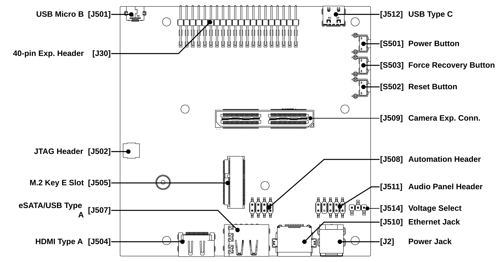
Header J511 supports Intel’s HD front panel audio connector. For details of Intel’s front panel audio header pinout configuration, see the Intel page Front Panel Audio Connector and Header Pinouts for Intel® Desktop Boards.
The header is connected internally to the RT5640 codec on Jetson AGX Orin.
Audio Formats Supported#
The Jetson AGX Orin ASoC driver supports these formats:
Sample size: 8 bits (S8), 16 bits (S16_LE), or 24/32 bits (S32_LE)
Sample rate: 8000, 11025, 16000, 22050. 24000, 32000, 44100, 48000, 88400, 96000, 176400, or 192000 Hz
Channels: 1 or 2
Usage Guide#
To set up and configure the audio path to play back or capture audio via the header, you must configure various ALSA mixer controls for both the Jetson device and the onboard codec. The following examples detail the ALSA mixer controls that you must configure.
The example describes usage with the RT5640 codec.
Codec Mixer Controls#
Codec mixer controls are registered by the codec driver and prefixed
with a substring defined by the prefix property of the
corresponding DAI link in sound device tree node.
To view the codec-specific mixer controls, enter this command line with the appropriate name prefix:
$ amixer -c APE controls | grep <prefix>
Alternatively, look for the codec-specific controls in the codec driver.
Playback#
You can connect headphones or speakers to either or both of the playback
ports, PORT 2R and PORT 2L, to play back mono or stereo recordings. Use
the mixer control settings shown below.
Note
See the manufacturer’s documentation for the Front Panel Audio Connector for port numbering details.
For mono playback to pin PORT 2L:
# AHUB Mixer Controls $ amixer -c APE cset name="I2S1 Mux" "ADMAIF1" $ amixer -c APE cset name="I2S1 codec frame mode" "dsp-a" # Codec RT5640 Mixer Controls (apply on Jetson AGX Orin) # --------------------------------------------------------------------- $ amixer -c APE cset name="CVB-RT HP Playback Volume" 30 $ amixer -c APE cset name="CVB-RT Stereo DAC MIXR DAC R1 Switch" "off" $ amixer -c APE cset name="CVB-RT Stereo DAC MIXL DAC L1 Switch" "on" $ amixer -c APE cset name="CVB-RT HP R Playback Switch" "off" $ amixer -c APE cset name="CVB-RT HP L Playback Switch" "on" # Start playback $ aplay -D hw:APE,0 <in_wav>
For mono playback to port PORT 2R:
# AHUB Mixer Controls $ amixer -c APE cset name="I2S1 Mux" "ADMAIF1" $ amixer -c APE cset name="I2S1 codec frame mode" "dsp-a" # Codec RT5640 Mixer Controls (apply on Jetson AGX Orin) # --------------------------------------------------------------------- $ amixer -c APE cset name="CVB-RT HP Playback Volume" 30 $ amixer -c APE cset name="CVB-RT Stereo DAC MIXR DAC R1 Switch" "on" $ amixer -c APE cset name="CVB-RT Stereo DAC MIXL DAC L1 Switch" "off" $ amixer -c APE cset name="CVB-RT HP R Playback Switch" "on" $ amixer -c APE cset name="CVB-RT HP L Playback Switch" "off" # Start playback $ aplay -D hw:APE,0 <in_wav>
For stereo playback to both playback ports:
# AHUB Mixer Controls $ amixer -c APE cset name="I2S1 Mux" "ADMAIF1" # Codec RT5640 Mixer Controls (apply on Jetson AGX Orin) # --------------------------------------------------------------------- $ amixer -c APE cset name="CVB-RT HP Playback Volume" 30 $ amixer -c APE cset name="CVB-RT Stereo DAC MIXR DAC R1 Switch" "on" $ amixer -c APE cset name="CVB-RT Stereo DAC MIXL DAC L1 Switch" "on" $ amixer -c APE cset name="CVB-RT HP R Playback Switch" "on" $ amixer -c APE cset name="CVB-RT HP L Playback Switch" "on" # Start playback $ aplay -D hw:APE,0 <in_wav>
Microphone Capture#
You can connect microphones to either or both of the recording ports,
PORT 1R and PORT 1L, to capture mono or stereo sound. Use these
mixer control settings:
For mono mic capture from PORT 1R:
$ amixer -c APE cset name="ADMAIF1 Mux" "I2S1" $ amixer -c APE cset name="I2S1 codec frame mode" "dsp-a" # RT5640 Codec Mixer Controls (apply on Jetson AGX Orin) # --------------------------------------------------------------------- # To disable capture from PORT 1L $ amixer -c APE cset name="CVB-RT RECMIXL BST1 Switch" "off" $ amixer -c APE cset name="CVB-RT RECMIXR BST1 Switch" "off" # To enable capture from PORT 1R $ amixer -c APE cset name="CVB-RT RECMIXL BST2 Switch" "on" $ amixer -c APE cset name="CVB-RT RECMIXR BST2 Switch" "off" # Volume control for PORT 1R $ amixer -c APE cset name="CVB-RT IN2 Boost" 8 $ amixer -c APE cset name="CVB-RT Stereo ADC1 Mux" "ADC" $ amixer -c APE cset name="CVB-RT Stereo ADC MIXL ADC1 Switch" "on" $ amixer -c APE cset name="CVB-RT Stereo ADC MIXR ADC1 Switch" "on" # Start capture $ arecord -Dhw:APE,0 -c 1 -r 48000 -f S16_LE -d 15 <out_wav>
For mono mic capture from PORT 1L:
$ amixer -c APE cset name="ADMAIF1 Mux" "I2S1" $ amixer -c APE cset name="I2S1 codec frame mode" "dsp-a" # RT5640 Codec Mixer Controls (apply on Jetson AGX Orin) # --------------------------------------------------------------------- # To enable capture from PORT 1L $ amixer -c APE cset name="CVB-RT RECMIXL BST1 Switch" "on" $ amixer -c APE cset name="CVB-RT RECMIXR BST1 Switch" "off" # To disable capture from PORT 1R $ amixer -c APE cset name="CVB-RT RECMIXL BST2 Switch" "off" $ amixer -c APE cset name="CVB-RT RECMIXR BST2 Switch" "off" # Volume control for PORT 1R $ amixer -c APE cset name="CVB-RT IN1 Boost" 8 $ amixer -c APE cset name="CVB-RT Stereo ADC1 Mux" "ADC" $ amixer -c APE cset name="CVB-RT Stereo ADC MIXL ADC1 Switch" "on" $ amixer -c APE cset name="CVB-RT Stereo ADC MIXR ADC1 Switch" "on" # Start capture $ arecord -Dhw:APE,0 -c 1 -r 48000 -f S16_LE -d 15 <out_wav>
For stereo mic capture from both recording ports:
$ amixer -c APE cset name="ADMAIF1 Mux" "I2S1" # RT5640 Codec Mixer Controls (apply on Jetson AGX Orin) # --------------------------------------------------------------------- # To enable capture from PORT 1L $ amixer -c APE cset name="CVB-RT RECMIXL BST1 Switch" "on" # To enable capture from PORT 1R $ amixer -c APE cset name="CVB-RT RECMIXR BST2 Switch" "on" # Volume control for PORT 1L and PORT 1R $ amixer -c APE cset name="CVB-RT IN1 Boost" 8 $ amixer -c APE cset name="CVB-RT IN2 Boost" 8 $ amixer -c APE cset name="CVB-RT Stereo ADC1 Mux" "ADC" $ amixer -c APE cset name="CVB-RT Stereo ADC MIXL ADC1 Switch" "on" $ amixer -c APE cset name="CVB-RT Stereo ADC MIXR ADC1 Switch" "on" # Start capture $ arecord -Dhw:APE,0 -c 2 -r 48000 -f S16_LE -d 15 <out_wav>
Usage and Examples#
This section gives an example of how a device’s I/O interfaces and AHUB modules can be used in audio applications.
This shows a dump of sound card descriptions from a Jetson AGX Orin device.
Note
The example uses a specific ADMAIF, but you may choose any ADMAIF you want.
$ cat /proc/asound/cards
0 [HDA ]: tegra-hda - NVIDIA Jetson AGX Orin HDA
NVIDIA Jetson AGX Orin HDA at 0x3518000 irq 122
1 [APE ]: tegra-ape - NVIDIA Jetson AGX Orin APE
Unknown-JetsonAGXOrinDeveloperKit-NotSpecified
For each sound card, the dump shows:
The initial number is the index of the sound card, a sequential number counting from 0.
The word in square brackets is the card ID (“card identifier”), a string that identifies a sound card. Trailing spaces are not part of the card ID.
tegra-hdaortegra-apeis the ALSA card driver name, that is, the machine driver name associated with the sound card. On Jetson devices, HDA sound cards usetegra-hdaand APE sound cards usetegra-ape.“NVIDIA Jetson AGX Orin HDA” and “…APE”: Short name of the sound card, and it is considered to be the name of the card.
“NVIDIA Jetson AGX Orin HDA at 0x3518000 irq 118” and “…APE”: Long name of the sound card.
Note
The example shows the two types of sounds cards that are built into the Jetson AGX Orin AHUB architecture, and use drivers provided by NVIDIA. A Jetson device might have other types. If you attached a USB headset to the device, for example, the dump will also show a USB sound card.
USB sound card names depend on the vendor and model of the sound card. A dump like the one above can help you determine a USB sound card’s long name.
The following table lists the short names that are used on different Jetson devices for APE and HDA cards.
Board name
APE card name
HDA card name
USB card name
Jetson Orin Series
NVIDIA Jetson Orin NX APE
NVIDIA Jetson Orin NX HDARefer to
/proc/asound/cardsfor the name after plugging in the USB.Jetson AGX Orin
NVIDIA Jetson AGX Orin APE
NVIDIA Jetson AGX Orin HDA
In addition to a name, each sound card has a device ID, as shown in the table later in this section.
For an APE card, the device ID refers to the ADMAIF channel index being used. Jetson devices have 20 ADMAIF channels, and each channel is associated with a playback device and a capture device. Each device has a device ID ranging from 0 to 19.
To determine how many sound cards are available, enter:
$ cat /proc/asound/cards
This command displays the index of the last sound card, which is one less than the number of sound cards. For example, if /proc/asound/cards contains ‘2’, the Jetson device has three sound cards, with card indexes 0, 1, and 2.
To list all of the available PCM sound cards’ device IDs, enter:
$ ls /dev/snd/pcmC?D*
This a convenient way to get the available device IDs for a given card. If you know the card’s index, you may use it in place of the ‘?’. Note, though, that sound card indexes are assigned in the order that the kernel registers the sound cards at boot time, so a given card ID may not represent the same card from boot to boot.
To display a description of a specific PCM sound card, enter:
$ cat /dev/snd/pcmC<n>D<devID><f>
Where:
<n>is the card’s index, 0 or 1.<devID>is the card’s device ID<f>is the function of this device,cfor “capture” orpfor “playback.”
This table lists port to <devID> mappings for HDA devices, for which different HDA ports are mapped to specific <devID> values.
Port to device ID map
Device
Port Name
PCM Device ID
Jetson Orin Nano
DP
3 (DP single stream)
3 and 7 (DP multi-stream)
Jetson Orin NX
DP
3 (DP single stream)
3 and 7 (DP multi-stream)
Jetson Orin NX Module with Jetson Xavier NX Carrier Board
DP
3 (DP single stream)
3 and 7 (DP multi-stream)
HDMI
3
Jetson AGX Orin
HDMI/DP (DP)
3 (DP single stream)
3 and 7 (DP multi-stream)
Following are examples of device name usage for several different types of interfaces. In these examples:
<i>and<i−1>are respectively the number of the ADMAIF channel to be used, and that number minus 1.<in_wav>and<out_wav>are respectively the pathnames of the input and output sound files. Both must be.wavfiles.<rate>is the sampling rate to be used.<bits>is the number of bits per sample.<channels>is the number of channels to be used.
Examples: I2S#
These examples illustrate various I/O playback and capture using I2S2 with ADMAIF<i>.
Playback#
Playback using I2S2 with ADMAIF<i>:
$ amixer -c APE cset name="I2S2 Mux" ADMAIF<i>
$ aplay -D hw:APE,<i-1> <in_wav>
Capture#
Capture using I2S2 with ADMAIF<i>:
$ amixer -c APE cset name="ADMAIF<i> Mux" I2S2
$ arecord -D hw:APE,<i-1> -r <rate> -c <channels> -f <sample_format> <out_wav>
Internal Loopback#
Internal Loopback using I2S2 with ADMAIF<i>:
$ amixer -c APE cset name="I2S2 Mux" "ADMAIF<i>"
$ amixer -c APE cset name="ADMAIF<i> Mux" "I2S2"
$ amixer -c APE cset name="I2S2 Loopback" "on"
$ aplay -D hw:APE,<i-1> <in_wav> &
$ arecord -D hw:APE,<i-1> -r <rate> -c <channels> -f <sample_format> <out_wav>
AHUB Usage in Hostless Mode#
If I2S1 and I2S4 are connected to an external codec and are functional, make these changes to send audio directly from I2S4 to I2S1, where both are located on same device:
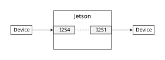
Data parameter configuration: Override the sample rate, sample size, and number of channels configured in the corresponding DAI links of I2S1 and I2S4 as shown below. NVIDIA recommends that the properties be fixed for a given use case.
tegra_sound: sound { &i2s1_to_codec: { bit-format = "s16_le"; srate = <48000>; num-channel = <2>; }; &i2s4_to_codec { bit-format = "s16_le"; srate = <48000>; num-channel = <2>; }; ... };Data path setup: I2S4 must send data received from an external source to I2S1. Specify the mixer settings as follows to configure the data path:
$ amixer -c APE cset name="I2S1 codec master mode" "cbs-cfs" $ amixer -c APE cset name="I2S1 codec frame mode" "i2s" $ amixer -c APE cset name="I2S4 FSYNC Width" "31" $ amixer -c APE cset name="I2S4 BCLK Ratio" "1" $ amixer -c APE cset name=="I2S4 codec master mode" "cbm-cfm" $ amixer -c APE cset name=="I2S4 codec frame mode" "i2s" $ amixer -c APE cset name="codec-x rate" "<rate>" $ amixer -c APE cset name="I2S1 Mux" "I2S4"
Clock configuration: NVIDIA recommends that you configure either or both Jetson I2S ports as master for this use case. (See I2S: Mixer Controls for mixer controls for codec master mode configuration). Take note of the remarks in the following table to identify additional configuration needed.
Master Configuration
Remarks
I2S1
To avoid clock drift, I2S1 must be configured in the
.dtsfile to use the I2S4 sync clock.I2S4
To avoid clock drift, I2S4 must be configured in the
.dtsfile to use the I2S1 sync clock.Both I2S1 and I2S4
Both clocks are driven from the same PLL source, so clock drift is not an issue, and sync clock configuration is not needed.
In the example above, I2S1 is configured as bit clock master. Since I2S4 is configured as slave, I2S4 uses an external clock source, and I2S1 is configured to source its clock from the internal PLL in the default DT. To avoid clock drift caused by using different clock sources, I2S1 is configured to use the I2S4 clock as its sync clock by the following patch in the I2S1 DT entry:
clocks = <&bpmp TEGRA234_CLK_I2S1>,
<&bpmp TEGRA234_CLK_I2S1_SYNC_INPUT>;
clock-names = "i2s", "sync_input";
- assigned-clocks = <&bpmp TEGRA234_CLK_I2S1>;
+ assigned-clocks = <&bpmp TEGRA234_CLK_I2S1>,
+ <&bpmp TEGRA234_CLK_SYNC_I2S1>;
assigned-clock-parents =
- <&bpmp TEGRA234_CLK_PLLA_OUT0>;
+ <&bpmp TEGRA234_CLK_I2S1_SYNC>,
+ <&bpmp TEGRA234_CLK_SYNC_I2S4>;
assigned-clock-rates = <1536000>;
Note that the clock names used in this patch are Jetson device-specific. Also note that you must ensure that the sync clock used (the I2S4 clock in this example) is up and running before starting the use case.
Multi-Channel (TDM) Capture#
To perform TDM capture on I2S4 via ADMAIF, enter these commands:
$ amixer -c APE cset name="ADMAIF<i> Mux" "I2S4"
$ amixer -c APE cset name="I2S4 codec master mode" "cbs-cfs"
$ amixer -c APE cset name="I2S4 codec frame mode" "dsp-a"
$ amixer -c APE cset name="I2S4 FSYNC Width" 0
$ arecord -D hw:APE,<i-1> -r <rate> -c <channels> -f <sample_format> <out_wav>
Where:
<i>and<i-1>respectively represent an ADMAIF instance number, and the number minus 1.The last digit of I2S4 may be changed to use a different channel.
Note that “I2S4 codec frame mode” and “I2S4 fsync width” must be set to the data offset with regard to fsync and fsync width available from the I2S timing diagram in the codec data sheet. “I2S4 codec master mode” must be set as per the mode of operation (master/slave). For more details on mixer controls, see Codec Driver, I2S, Mixer Controls.
Examples: DMIC#
The following sections describe usage of the DMIC module to perform stereo capture and mono capture on left or right channel.
Stereo Capture#
These examples show how to capture stereo data from DMIC3 via ADMAIF<i>:
$ amixer -c APE cset name="ADMAIF<i> Mux" DMIC3
#Gain must be tuned as per sensitivity of the external mic
$ amixer -c APE cset name="DMIC3 Boost Gain Volume" 400
$ arecord -D hw:APE,<i-1> -r 48000 -c 2 -f S16_LE <out_wav>
Mono Capture (L)#
This example shows how to perform mono capture from DMIC3 via ADMAIF<i> (left microphone):
$ amixer -c APE cset name="ADMAIF<i> Mux" DMIC3
$ amixer -c APE cset name="DMIC3 Boost Gain Volume" 400
$ amixer -c APE cset name="DMIC3 Channel Select" "Left"
$ arecord -D hw:APE,<i-1> -r 48000 -c 1 -f S16_LE <out_wav>
Mono Capture (R)#
This example shows how to perform mono capture from DMIC3 via ADMAIF<i> (right microphone):
$ amixer -c APE cset name="ADMAIF<i> Mux" DMIC3
$ amixer -c APE cset name="DMIC3 Boost Gain Volume" 400
$ amixer -c APE cset name="DMIC3 Channel Select" "Right"
$ arecord -D hw:APE,<i-1> -r 48000 -c 1 -f S16_LE <out_wav>
Example: DSPK#
This example shows how to perform stereo playback on DSPK1 via ADMAIF<i>:
$ amixer -c APE cset name="DSPK1 Mux" ADMAIF<i>
$ aplay -D hw:APE,<i-1> <in_wav>
Examples: MVC#
The following examples show how to apply gain and to mute and unmute the stream. The MVC supports up to eight channels, with control of per-channel gain and mute/unmute.
Apply Gain to a Playback Stream#
This command model shows how to use the MVC module to control volume during playback on I2S:
$ amixer -c APE cset name="MVC1 Mux" ADMAIF<i>
$ amixer -c APE cset name="I2S1 Mux" MVC1
$ amixer -c APE cset name="MVC1 Volume" <Q8.24_Val>
$ aplay -D hw:APE,<i-1> <in_wav>
The MVC module supports per-channel volume control. That is, it can apply a different gain factor to each channel. To set per-channel volume, use this mixer control:
$ amixer -c APE cset name="MVC1 Channel<x> Volume" <Q8.24_Val>
Where <x> is the MVC channel number (1, 2 … 8).
Mute and Unmute Channels#
This example shows how to mute and unmute channels during I2S playback:
$ amixer -c APE cset name="MVC1 Mux" ADMAIF<i>
$ amixer -c APE cset name="I2S1 Mux" MVC1
$ amixer -c APE cset name=”MVC1 Per Chan Mute Mask” <mask>
$ aplay -D hw:APE,<i-1> <in.wav>
Where <mask> is the mute/unmute mask value. The mask supports per-channel mute control. The mask’s value may be 0 to 255 (0x0 to 0xFF); to mute channel n of the stream, set bit n to 1.
Similarly to unmute channel n of the stream, set bit n to 0.
Examples: AMX#
These sections provide usage examples for multiplexing two and three streams and for demultiplexing one stereo stream into two mono streams.
Multiplexing Two Streams#
This example shows how to use the AMX module to multiplex two stereo streams, DMIC2 (connected to RxCIF0) and DMIC3 (connected to RxCIF1):
$ amixer -c APE cset name="AMX2 RX1 Mux" "DMIC2"
$ amixer -c APE cset name="AMX2 RX2 Mux" "DMIC3"
$ amixer -c APE cset name="AMX2 Output Audio Channels" 4
$ amixer -c APE cset name="ADMAIF<i> Mux" AMX2
$ amixer -c APE cset name="ADMAIF<i> Playback Audio Channels" 4
$ amixer -c APE cset name="ADMAIF<i> Capture Audio Channels" 4
$ amixer -c APE cset name="ADMAIF<i> Playback Client Channels" 4
$ amixer -c APE cset name="ADMAIF<i> Capture Client Channels" 4
$ amixer -c APE cset name="AMX2 Byte Map 0" 0
$ amixer -c APE cset name="AMX2 Byte Map 1" 1
$ amixer -c APE cset name="AMX2 Byte Map 2" 2
$ amixer -c APE cset name="AMX2 Byte Map 3" 3
$ amixer -c APE cset name="AMX2 Byte Map 4" 4
$ amixer -c APE cset name="AMX2 Byte Map 5" 5
$ amixer -c APE cset name="AMX2 Byte Map 6" 6
$ amixer -c APE cset name="AMX2 Byte Map 7" 7
$ amixer -c APE cset name="AMX2 Byte Map 8" 64
$ amixer -c APE cset name="AMX2 Byte Map 9" 65
$ amixer -c APE cset name="AMX2 Byte Map 10" 66
$ amixer -c APE cset name="AMX2 Byte Map 11" 67
$ amixer -c APE cset name="AMX2 Byte Map 12" 68
$ amixer -c APE cset name="AMX2 Byte Map 13" 69
$ amixer -c APE cset name="AMX2 Byte Map 14" 70
$ amixer -c APE cset name="AMX2 Byte Map 15" 71
$ arecord -D hw:APE,<i-1> -r 48000 -c 4 -f S16_LE <out_wav>
Multiplexing Three Streams#
This example shows how to use the AMX module to multiplex three stereo streams, DMIC2 (connected to RxCIF0), DMIC3 (connected to RxCIF1), and I2S (connected to RxCIF2):
$ amixer -c APE cset name="AMX2 RX1 Mux" "DMIC2"
$ amixer -c APE cset name="AMX2 RX2 Mux" "DMIC3"
$ amixer -c APE cset name="AMX2 RX3 Mux" "I2S2"
$ amixer -c APE cset name="I2S2 Playback Audio Channels" 2
$ amixer -c APE cset name="I2S2 Capture Audio Channels" 2
$ amixer -c APE cset name="I2S2 Client Channels" 2
$ amixer -c APE cset name="AMX2 Output Audio Channels" 6
$ amixer -c APE cset name="ADMAIF<i> Mux" AMX2
$ amixer -c APE cset name="ADMAIF<i> Playback Audio Channels" 6
$ amixer -c APE cset name="ADMAIF<i> Capture Audio Channels" 6
$ amixer -c APE cset name="ADMAIF<i> Playback Client Channels" 6
$ amixer -c APE cset name="ADMAIF<i> Capture Client Channels" 6
$ amixer -c APE cset name="AMX2 Byte Map 0" 0
$ amixer -c APE cset name="AMX2 Byte Map 1" 1
$ amixer -c APE cset name="AMX2 Byte Map 2" 2
$ amixer -c APE cset name="AMX2 Byte Map 3" 3
$ amixer -c APE cset name="AMX2 Byte Map 4" 4
$ amixer -c APE cset name="AMX2 Byte Map 5" 5
$ amixer -c APE cset name="AMX2 Byte Map 6" 6
$ amixer -c APE cset name="AMX2 Byte Map 7" 7
$ amixer -c APE cset name="AMX2 Byte Map 8" 64
$ amixer -c APE cset name="AMX2 Byte Map 9" 65
$ amixer -c APE cset name="AMX2 Byte Map 10" 66
$ amixer -c APE cset name="AMX2 Byte Map 11" 67
$ amixer -c APE cset name="AMX2 Byte Map 12" 68
$ amixer -c APE cset name="AMX2 Byte Map 13" 69
$ amixer -c APE cset name="AMX2 Byte Map 14" 70
$ amixer -c APE cset name="AMX2 Byte Map 15" 71
$ amixer -c APE cset name="AMX2 Byte Map 16" 128
$ amixer -c APE cset name="AMX2 Byte Map 17" 129
$ amixer -c APE cset name="AMX2 Byte Map 18" 130
$ amixer -c APE cset name="AMX2 Byte Map 19" 131
$ amixer -c APE cset name="AMX2 Byte Map 20" 132
$ amixer -c APE cset name="AMX2 Byte Map 21" 133
$ amixer -c APE cset name="AMX2 Byte Map 22" 134
$ amixer -c APE cset name="AMX2 Byte Map 23" 135
$ arecord -D hw:APE,<i-1> -r 48000 -c 6 -f S16_LE <out_wav>
Examples: ADX#
This example shows how to use the ADX module to demultiplex 16-bit stereo streams onto DSPK1 and DSPK2:
$ amixer -c APE cset name="ADX1 Mux" ADMAIF<i>
$ amixer -c APE cset name="ADX1 Input Audio Channels" 2
$ amixer -c APE cset name="DSPK1 Mux" "ADX1 TX1"
$ amixer -c APE cset name="DSPK2 Mux" "ADX1 TX1"
$ amixer -c APE cset name="ADX1 Output1 Audio Channels” 1
$ amixer -c APE cset name="ADX1 Output2 Audio Channels” 1
$ amixer -c APE cset name="ADX1 Byte Map 0" 0
$ amixer -c APE cset name="ADX1 Byte Map 1" 1
$ amixer -c APE cset name="ADX1 Byte Map 2" 2
$ amixer -c APE cset name="ADX1 Byte Map 3" 3
$ amixer -c APE cset name="ADX1 Byte Map 4" 64
$ amixer -c APE cset name="ADX1 Byte Map 5" 65
$ amixer -c APE cset name="ADX1 Byte Map 6" 66
$ amixer -c APE cset name="ADX1 Byte Map 7" 67
$ aplay -D hw:APE,<i-1> <in_wav>
Examples: SFC#
This example shows how to perform sample rate conversion from 48000 to 44100 Hz and capture using ADMAIF2, where ADMAIF3 feeds the SFC1 and generates sample frequency-converted output:
$ amixer -c APE cset name="SFC1 Mux" ADMAIF3
$ amixer -c APE cset name="ADMAIF2 Mux" SFC1
$ amixer -c APE cset name="SFC1 Input Sample Rate" 48000
$ amixer -c APE cset name="SFC1 Output Sample Rate" 44100
$ aplay -D hw:APE,2 <in_wav>
$ arecord -D hw:APE,1 -r 44100 -c <channels> -f <sample_format> <out_wav>
Examples: Mixer#
This example shows how to mix two input streams to generate a single output stream via Adder1 of the Mixer module:
$ amixer -c APE cset name="MIXER1 RX1 Mux" ADMAIF1
$ amixer -c APE cset name="MIXER1 RX2 Mux" ADMAIF2
$ amixer -c APE cset name="MIXER1 Adder1 RX1" 1
$ amixer -c APE cset name="MIXER1 Adder1 RX2" 1
$ amixer -c APE cset name="MIXER1 Mixer Enable" 1
$ amixer -c APE cset name="ADMAIF3 Mux" MIXER1 TX1
$ aplay -D hw:APE,0 <inputfile1.wav>
$ aplay -D hw:APE,1 <inputfile2.wav>
$ arecord -D hw:APE,2 -r <rate> -c <channels> -f <sample_format> <out_wav>
Examples: HDMI/DP Playback#
This example shows how to perform playback on an HDMI/DP device (e.g. a monitor with speakers):
$ aplay -Dhw:HDA,<devID> <in_wav>
Examples: USB#
The following sections provide usage examples of playback and capture on USB.
Playback#
This example shows how to perform playback on a USB device:
$ aplay -Dhw:<cardID>,<devID> <in_wav>
Capture#
This example shows how to perform capture on a USB device:
$ arecord -Dhw:<cardID>,<devID> -r <rate> -c <channels> -f <sample_format> <out_wav>
Troubleshooting#
This section describes some issues that are liable to occur when you are working with ASoC drivers, and their probable causes and solutions.
No Sound Cards Found#
This has several possible causes. Some typical ones are described below. In most cases the dmesg output can provide clues.
Source/Sink Widget Not Found#
The dmesg output shows that “no source widget” or “no sink widget” was found, as shown in this example log:
$ dmesg | grep "ASoC"
tegra-asoc: sound: ASoC: no source widget found for x OUT
tegra-asoc: sound: ASoC: Failed to add route x OUT -> direct -> Headphone Jack
tegra-asoc: sound: ASoC: no sink widget found for x IN
tegra-asoc: sound: ASoC: Failed to add route Mic Jack -> direct -> x IN
In the above log, x OUT and x IN widgets are not found. ASoC may not have instantiated corresponding codecs. Confirm this by checking below:
$ cat /sys/kernel/debug/asoc/components
If the codec is not instantiated, it could be due to one of these reasons:
The codec is not enabled in the Linux kernel configuration. Enter these commands to determine whether the codec is enabled:
$ zcat /proc/config.gz | grep <codec_config>
Where
<codec_config>is the name of the config that represents the codec inconfig.gz. You must define it if it is not already available, and you must ensure that it is enabled in the Linux kernel configuration.The I2C port connected to the codec is not configured with the proper pinmux settings. Check whether the default pinmux settings are correct for the desired I2C port in the Jetson device-specific pinmux worksheet, which you can download by searching the Jetson Download Center for “pinmux.”
If the pinmux settings for the I2C port are not correct, set them as instructed in the section “Pinmux Changes” of the “Jetson Module Adaptation and Bring-Up” topic that applies to your Jetson device.
Once the pinmux settings are correct, enter this command to scan the desired I2C bus and confirm that the codec is being probed:
$ i2cdetect -y -r <i2c-bus-number>
If the scan does not indicate that the codec is present, it could be due to a loose connection, or the codec could be connected to another I2C bus. To check for the latter cause, scan the rest of the available I2C buses, identify the bus that is connected to the codec, and place the codec device tree node in the that I2C bus’s DT node.
The widget’s prefix (
xin this case) is neither the same as the one specified in theprefixentry of the codec subnode of DAI link, nor the same as the one specified under thesound-name-prefixentry of the corresponding codec device node. In this case, edit or override the prefixes appropriately.
CPU DAI Not Registered#
The dmesg output shows that no “CPU DAI” was found:
$ dmesg | grep "ASoC"
tegra-asoc: sound: ASoC: CPU DAI DAP not registered
In this case, “DAP” is the CPU DAI for the I2S-to-codec DAI link.
The ASoC may not have instantiated the I2S codec. To determine whether the codec is instantiated, enter the command:
$ cat /sys/kernel/debug/asoc/components
If the I2S codec is instantiated, it has a name like <addr>.i2s, where
<addr> is the corresponding unit-address (i2s@<addr>) used in DT for the device.
Identifying the DAI link at the point of failure can give a clue to the I2S instance number that failed to instantiate. Accordingly, you can instantiate the I2S codec driver by providing a suitable entry point in the device tree structure (DTS) file as described in Codec Driver Instantiation Using Device Tree.
Sound Not Audible or Not Recorded#
Follow this procedure to diagnose the issue:
Determine whether the DAPM path is completed. You may need to set some codec-specific mixer controls to enable playback or capture. You can get these settings from the codec vendor or from the codec data sheet. For tracing the DAPM path, DAPM tracing events must be enabled before you run the playback or capture use case using the command:
$ for i in `find /sys/kernel/debug/tracing/events -name "enable" | grep snd_soc_`; do echo 1 > $i; done
If the DAPM path is not complete, the use case cannot proceed. The DAPM path is populated in the file below as and when it is set up:
$ cat /sys/kernel/debug/tracing/trace_pipe | grep \*
Below is a complete sample DAPM path for recording through the microphone jack on Jetson AGX Orin through an RT5640 audio codec, ADMAIF1, and I2S1. Another audio path will produce a similar dump, depending on the widgets defined in the path. Here is a filtered log for the sake of illustration:
snd_soc_dapm_path: *CVB-RT AIF1 Capture <- (direct) <- CVB-RT AIF1TX snd_soc_dapm_path: *CVB-RT AIF1 Capture -> (direct) -> rt5640-playback-capture snd_soc_dapm_path: *CVB-RT AIF1TX -> (direct) -> CVB-RT AIF1 Capture [ ... ] snd_soc_dapm_path: *CVB-RT IN1N -> (direct) -> CVB-RT BST1 snd_soc_dapm_path: *CVB-RT IN1P -> (direct) -> CVB-RT BST1 snd_soc_dapm_path: *CVB-RT IN2N -> (direct) -> CVB-RT BST2 snd_soc_dapm_path: *CVB-RT IN2N -> (direct) -> CVB-RT INR VOL snd_soc_dapm_path: *CVB-RT IN2P -> (direct) -> CVB-RT BST2 snd_soc_dapm_path: *CVB-RT IN2P -> (direct) -> CVB-RT INL VOL snd_soc_dapm_path: *CVB-RT Mic Jack -> (direct) -> CVB-RT IN1P snd_soc_dapm_path: *CVB-RT Mic Jack -> (direct) -> CVB-RT IN2P [ ... ] snd_soc_dapm_path: *I2S1 CIF-Capture <- (direct) <- I2S1 TX snd_soc_dapm_path: *I2S1 CIF-Capture -> (direct) -> tegra-dlink-64-capture snd_soc_dapm_path: *I2S1 DAP-Playback -> (direct) -> I2S1 TX snd_soc_dapm_path: *I2S1 DAP-Playback <- (direct) <- rt5640-playback-capture snd_soc_dapm_path: *I2S1 XBAR-Playback -> (direct) -> I2S1 XBAR-RX snd_soc_dapm_path: *I2S1 XBAR-Playback <- (direct) <- tegra-dlink-64-capture
You must ensure that there is a valid DAPM path from source widgets to sink widgets. This dump gives a platform DAPM path involving all the components that get activated during a use case.
Verify the settings for the audio interface pins. The pins for the audio interface must be configured as special function IOs (SFIOs) and not GPIOs. The pinmux settings for the SFIOs must select the desired audio functions.
See Board Interfaces to determine whether pinmux settings are required. If they are, see the pinmux change instructions in the :Jetson Module Adaptation and Bring-Up” topic that applies to your Jetson device.
To verify the default SFIO pinmux configuration, check the pinmux node in the appropriate device tree source file after applying the override in case of SFIO configuration through override.
Confirm that the audio interface’s
statusproperty is set to"okay"in the appropriate device tree source file.For example, for Jetson AGX Orin, the device tree file is at:
hardware/nvidia/t23x/nv-public/tegra234-p3701.dtsi
An alternative method is to use the following command to inspect the device tree entries from the target and find the
.dtsfile that has been flashed:$ dtc -I fs -O dts /proc/device-tree >/tmp/dt.log
Probe the audio signals with an oscilloscope.
For example, if using I2S, probe the frame sync (
FS) and bit clock (BCLK) to verify that the timings are correct. If the Jetson I2S is transmitting, probeFSandBCLKto verify that they are generated as desired.
I2S Software Reset Failed#
A common problem is that the I2S software reset fails when starting playback or capture via an I2S interface. Error messages like this one appear in the dmesg log:
tegra210-i2s 2901000.i2s: timeout: failed to reset I2S for playback
tegra210-i2s 2901000.i2s: ASoC: PRE_PMU: I2S1 RX event failed: -22
This problem occurs when the clock for the I2S interface is not active, and hence the software reset fails. It typically occurs when the I2S interface is the bit clock slave and hence the bit clock is provided by an external device such as a codec. If this problem occurs, check whether the bit clock is being enabled when the playback or capture is initiated.
XRUN Observed During Playback or Capture#
An XRUN is either an underrun (on playback) or overrun (on capture) of the audio circular buffer.
In the case of playback, the CPU writes to the audio circular buffer. The DMA reads it and sends the data to the appropriate audio interface (I2S, etc.) via the AHUB.
In the case of capture, the DMA writes data received from the AHUB to the audio circular buffer, and the CPU reads it.
An XRUN event typically indicates that the CPU is unable to keep up with the DMA. In the case of playback, the DMA reads stale data. In the case of capture, data is lost. Hence, an XRUN event can signify a system performance or latency issue, which can have many different causes.
If an XRUN occurs, try these measures to determine whether there is a performance issue:
Enable maximum performance by running
jetson_clocks.sh. This script is in the user home directory on the Jetson device’s root file system.For more information about
jetson_clocks.sh, search for references to it in the appropriate Platform Power and Performance topic for your Jetson device.Use a RAM file system for reading and writing the audio data. The default root file system format for Jetson devices is EXT4 with journaling enabled. Latencies have been observed with journaling file systems such as EXT4, and can lead to XRUN events. Enter these commands to create a simple 100 MB RAM file system:
$ sudo mkdir /mnt/ramfs $ sudo mount -t tmpfs -o size=100m tmpfs /mnt/ramfs
You can increase the size of the audio circular buffer to reduce the impact of system latencies. The default size of the buffer is 32 KB. The buffer size is specified by the
buffer_bytes_maxmember of the structuretegra_alt_pcm_hardwarein the Linux kernel source file:kernel/3rdparty/canonical/linux-jammy/kernel-source/sound/soc/tegra/tegra_pcm.c
Audio Pops and Clicks#
Pops and clicks may occur at the start or end of playback or capture because I2S starts transmitting or receiving data before the codec is completely powered up or down.
The following command delays transmission or reception of data by a specified number of milliseconds:
$ echo 10 | sudo tee /sys/kernel/debug/asoc/APE/dapm_pop_time
Get More Help on NVIDIA Developer Forum#
If none of the preceding steps help, post a query to the appropriate section of the NVIDIA Developer Forum, providing the following information:
Conditions under which the problem is manifested: sampling rate, sample width, etc.
Mixer control settings. Enter this command to display the settings:
$ amixer – c <cardID> contents > ~/settings.txt
Kernel log. Enter this command to display it:
$ dmesg > ~/kernel_log
Device tree log. Enter this command to display it:
$ dtc -I fs -O dts /proc/device-tree >/tmp/dt.log
Clock summary. Enter this command to display it:
$ cat /sys/kernel/debug/clk/clk_summary > ~/clock
Oscilloscope snapshots at an appropriate resolution, with and without the codec.
Mixer control settings before initiating the use case.
Pinmux dump for all pinmux nodes. Enter this command to display it:
$ cat /sys/kernel/debug/pinctrl/<addr>.pinmux/pinconf-groups > ~/pinmux_<addr>
Register dump of I2S being used while running the use case. For example:
$ cat /sys/kernel/debug/regmap/<addr>.i2s/registers > ~/reg_dump
where <addr> is the unit-address of I2S device (i2s@<addr>) in DT. Use the same for lookup of corresponding regmap path.
If a codec is used, register dump of the codec while running the use case:
$ cat /sys/kernel/debug/regmap/<addr>/registers > ~/codec_regdump
where <addr> is the combination of the I2C address and codec address.